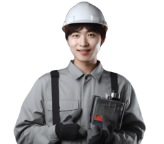
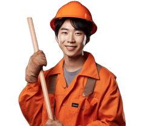
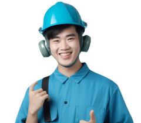
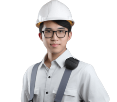
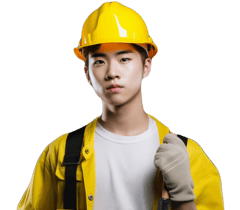
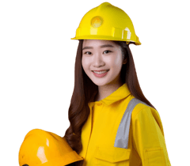

全部职业4558
全部职业4558首席人力资源官
负责公司人力资源策略和管理的高级职位
人力资源信息系统管理员
管理HR信息系统，维护员工数据，协助培训和招聘过程，解决系统问题和提供支持。
人力资源解决方案工程师
提供人力资源问题解决方案的专家
招聘交付顾问
负责将产品或服务交付给客户的工作人员
RPO顾问
招聘流程外包顾问，帮助企业实现高效、精准、可持续的招聘需求
猎头顾问
负责与客户合作、寻找并招聘高级职位候选人的专业人士
劳务派遣项目经理
负责人员派遣、协调项目进度、管理团队及客户关系，确保项目顺利进行。
劳务派遣管理员
管理劳务派遣流程、维护用工质量
职业规划师
职业发展指导师
培训HR
负责为企业员工提供专业技能和知识的培训。
招聘HR
招聘合适的员工，满足公司需求。
职业指导师
为求职者提供职业规划建议，帮助其选择适合自己的职业。
HRBP
企业派驻到各个业务或事业部的人力资源管理者
人才测评师
进行人才测评，分析评估个人能力和潜力，提供职业发展建议。
职业培训师
为职场人员提供专业技能培训和职业规划指导。
首席执行官
公司最高管理者
首席运营官
统筹公司运营，提升综合效益
副总裁
负责协助总裁管理公司业务和制定战略计划，监督部门运营并参与决策。
总监
负责领导和管理整个部门或组织，制定战略方向并监督实施，确保达成目标和绩效。
战略管理
负责制定和执行组织发展的长期规划，分析市场趋势，制定战略方向，参与业务决策。
分公司总经理
负责全面管理分公司运营，制定发展策略、监控业绩、领导团队和协调各部门工作。
投资者关系管理
管理公司与投资者沟通的职业
合伙人
合作共赢的伙伴关系
秘书
协助领导、安排日程、处理文件、接待来访等职能，并保守机密
董事会秘书
董秘：董事会秘书
总经理助理
负责协助总经理日常工作的职位
企业董事
企业高管，领导管理团队，决策公司发展方向
私域运营师
包括社群运营、内容策划、粉丝互动、数据分析等工作，主要目标是提升品牌影响力。
商业数据分析师
商业数据分析师：处理企业数据，提供决策与优化分析
市场策划师
包括市场调研、制定营销策略、制定市场推广方案、监测和分析市场趋势，实现企业目标。
网络推广员
主要负责通过各种渠道宣传品牌或产品，包括社交媒体、SEO优化、广告投放等。
APP推广员
推广APP的职业
市场营销师
包括市场调研、制定营销策略、推广产品、管理品牌形象等，以促进销售和提升企业竞争力。
品牌策划师
负责品牌形象与市场推广，包括市场调研、策划活动、传播内容等工作。
市场调研员
负责设计和实施调查方案，分析市场数据，制定推广策略，并监测竞争动态。
营销策划师
制定营销方案，策划广告活动，预算管理，分析市场数据，推广产品或服务。
数字营销
涉及数字广告、社交媒体管理、内容创作等工作，提升品牌知名度和销售业绩。
海外营销
负责制定市场策略、开拓客户资源，推广产品并提升品牌声誉，以拓展海外市场。
内容营销
内容策划、创意制作、社交媒体管理、数据分析、推广执行等，为品牌或产品制定并执行营销策略。
用户研究员
通过调研和分析用户需求，为产品改进提供数据支持和建议。
渠道运营管理师
负责合作渠道管理、推广活动策划、数据分析和渠道绩效评估等工作。
营销顾问
制定营销策略，推广产品和服务，开展市场调研，参与市场活动和促销推广。
运营师
通过策划、执行等手段，提升产品或服务的用户活跃度、用户留存率以及营收
短视频运营
策划、推广短视频，提升流量与影响力
注册会计师
审计、会计、税务等领域的专业会计师
外勤会计
负责出差至客户处处理财务报表、税务申报等工作。
首席财务官
监督财务，制定预算，管理投资和风险
招投标员
协助招投标程序，管理招标文件
财务分析师
负责分析、评估企业的经济状况，提供决策依据
财务
负责企业资金规划和管控
全盘会计
全盘会计负责企业的整体会计核算和报表编制
项目会计
负责项目资金的管理与核算
海外结算会计
处理公司与海外客户之间的货币交易、跨国资金结算和报告法规遵从情况的工作
成本管理员
负责企业成本核算和控制的管理人员
税务项目经理
组织负责税务项目的管理、计划和执行的职业
标书制作员
制作招标文件的专业人员
会计
记录、分类、汇总和报告企业经济活动的职业
应收会计
记录、核对、处理公司应收账款及相关支出的职业
应付会计
负责企业账务处理和财务报告
成本会计
成本会计：负责记录和计算企业生产制造、销售产品所涉及的成本，为经营决策提供成本数据
总账会计
管理和监督公司财务活动的职业
税务会计
纳税申报与会计处理相结合的工作
费用会计
记录、计算、分析企业生产经营所发生的费用的专业职业
出纳
负责公司现金流入流出的员工
展会销售
负责展会现场产品推广、客户沟通与销售，提升品牌知名度，促进产品销售。
地推员
通过地面推广活动，吸引客户、提升品牌认知
销售顾问
推销产品或服务的代表
客户关系管理员
包括客户沟通、维护客户关系、解决问题、推销产品等。
客户成功顾问
负责与客户沟通、解决问题、提供支持并确保客户满意。
海外国家经理
制定业务策略、管理团队、监督项目执行、协调国内外部门合作、拓展市场、协商合作，提升公司业绩。
商务顾问
主要包括市场营销、销售、商务谈判等工作，通过合作与沟通获取商机，推动业务发展。
招商顾问
负责开拓客户资源，推广招商项目，洽谈合作协议，实现业务目标。
渠道销售
通过建立和管理销售渠道，将产品或服务推向市场
销售运营管理师
销售运营：协调销售活动的规划、实施与管理
网络销售
在网上销售商品和服务的职业
销售支持
协助销售团队完成销售工作，包括客户沟通、报价、订单处理、物流跟踪等工作。
国际商务顾问
涉及跨国贸易、市场分析、商务谈判等
外贸员
负责国际贸易的洽谈、订单处理、跟踪和客户关系维护等工作。
电话销售
利用电话工具进行销售推广的职业
大客户销售
销售给大客户的职业
区域销售
销售界限在特定地域内执行职责，负责促进其分配的产品或服务的销售和推广
团购业务员
推销团购服务的职业
火电锅炉运行员
监控火电锅炉运行情况，调整参数，解决故障，确保安全高效运行。
火电输煤运行员
负责火电厂输煤设备操作、监控、维护，确保供煤稳定，运行安全顺畅。
汽轮机运行员
汽轮机运行值班员 负责汽轮机设备24小时监控及运行调节，确保机组安全稳定运行
火电集控运行员
监控电厂设备运行，发电负荷及燃料消耗情况，保障发电运行安全稳定。
火电电气运行员
监控电气设备运行并及时处理异常问题的工作人员
火电电仪工程师
负责设计、安装、调试和维护火力发电厂的仪表系统，确保设备运行稳定。
热能工程师
设计、开发和管理热能相关系统的工程师
热力工程师
负责热力系统设计、维护和优化工作的专业人员
化学水处理工程师
化学水处理工程师：处理水质，提供干净、健康水源
汽轮机工程师
设计、制造、维护汽轮机的专业人士
光伏组件厂务工程师
负责光伏组件设备的工程技术管理及维护
光伏系统工程师
太阳能发电系统设计师
光伏电站值班员
光伏运维班人员，负责光伏发电设备的日常监测、调试、维护和故障处理
光伏切片工艺工程师
设计太阳能电池切片工艺流程，优化生产工艺，提高光伏产品性能。
晶硅电池研发工程师
负责设计和优化太阳能电池的结构和材料，提升光电转换效率。
光伏玻璃深加工工程师
设计和研发光伏玻璃深加工工艺，优化生产工艺流程，确保产品质量和效率。
光伏组件工艺工程师
设计和开发光电组件的专业工程师
光伏电站运维工程师
负责光伏电站的设备运行、维护、检修和故障处理等工作的专业人员
光伏市场开发工程师
负责市场调研、客户开发、项目投标等工作。
光伏电池研发工程师
负责设计、开发和改进太阳能电池技术，推动光伏产业的发展。
光伏工艺工程师
负责设计和优化太阳能电池和组件制造流程，确保生产效率和产品质量。
硅料研发工程师
主要负责研发和改进硅材料制备工艺及产品性能，参与新产品设计和实验验证。
硅片研发工程师
设计、开发和测试硅片制造工艺及设备，优化生产流程和提高产品质量。
光刻胶研发工程师
设计、研发和应用光刻胶的工程师
光伏技术支持工程师
光伏技术支持工程师：解决光伏技术方面的技术问题，提供技术服务支持
光伏逆变器工程师
设计、开发和维护光伏逆变器
光伏材料工程师
设计制备太阳能材料的专业工程师
光热工程师
光热工程师：研究和设计与太阳能光热能转换相关的系统和技术
光伏支架工程师
设计和构建太阳能电池板的支架结构的专业人员
光伏项目经理
管理太阳能发电项目的专业人员
光伏设计工程师
太阳能发电系统设计师
风电塔筒研发工程师
风电塔筒研发工程师负责设计和改进风力发电塔筒结构，优化风力发电系统性能。
风电场运行员
负责风电场的监控、维护和故障排除，确保风力发电机组安全高效运行。
叶片结构设计工程师
设计风力发电机的叶片
叶片维修工程师
修理风力发电机的专业技师
风电机组制造工
制造风力发电机设备的工人
风资源工程师
风力资源工程师：负责评估和开发风力资源，提高可再生能源利用率
风电运维工程师
风力发电设备的维护和保养工作
风电场检修员
维护风力发电设备的专业技术人员
风电电气工程师
设计、建设和运营风力发电项目的专业工程师
风电调试工程师
调试风力发电设备的工程师
风电服务工程师
风电维护技术员
风电工艺工程师
设计风电场的专业工程师
风电检测工程师
负责风力发电机的运行状态监测和故障维修的专业人员
风电项目经理
负责监督风能项目计划和实施，确保按时完成
制氢电控工程师
负责氢气制备设备的电控设计与维护
膜电极工艺工程师
优化膜电极生产工艺，确保产品稳定产出
电解槽工程师
设计和优化电解槽设备及工艺参数，负责生产监控和技术支持。
膜材料工程师
研发新型膜材料的工程师
储氢工程师
设计、开发和优化氢能储存系统，参与氢能储氢项目实施，负责相关技术解决方案。
加氢工艺工程师
负责设计和优化加氢反应装置，确保生产过程安全高效。
加氢站系统工程师
设计、建设和维护加氢站系统，确保加氢设备运行正常及符合标准要求。
燃料电池电堆工程师
负责设计、调试、维护和优化燃料电池电堆系统，确保其性能和稳定运行。
氢能项目经理
负责氢能项目策划、开发及管理
燃料电池工艺工程师
设计和优化氢燃料电池生产过程的工程师
燃料电池系统工程师
设计和开发燃料电池系统，改进性能和效率，解决问题，确保系统稳定运行。
膜电极工程师
设计和制造用于膜电极产业的电化学设备，解决技术问题，推动技术创新，确保设备正常运行。
燃料电池工程师
设计开发氢能电池系统的专业人员
氢能工程师
设计、开发和实施氢能相关技术的专业人员
制氢设备工程师
制氢设备工程师：设计、制造和维护氢气生产和存储设备的专业人员
加氢员
加氢员：为电动汽车、氢燃料车等提供加氢服务的工作人员
制氢工程师
设计和管理制氢工艺的专业人士
氢能工艺工程师
研发氢能产业的技术专家
氢能电气工程师
研究、开发和应用氢能源领域电气技术的专业人员
电池制造工
制造电池的工人
锂电池研发工程师
负责开发和改进锂电池技术，设计新型电池结构和材料以提高性能和安全性。
锂电池PACK工程师
负责设计、开发和测试锂电池PACK，包括电路设计、性能优化和安全保障等工作。
电池仿真工程师
负责开发电池模型，优化电池系统设计，提高电池性能与寿命。
电池项目经理
负责锂电池项目的计划、管理和实施
锂电池工艺工程师
设计和优化锂电池生产流程的专业工程师
PACK结构工程师
设计锂电池结构的工程师
正极材料工程师
研发正极材料，设计电池结构，优化性能和循环寿命，参与新技术开发和实验验证。
负极材料工程师
负责研究和开发新型的电池负极材料，优化电池性能和循环寿命，提升储能效率。
隔膜工程师
研发隔膜材料和产品的专业人员
电解液工程师
负责开发新型电解液，提升电池性能和安全性，优化电解液配方和工艺。
锂电池技术支持工程师
提供锂电池技术支持，解决客户问题并培训
电池维修工程师
电池维修工程师负责检测、维护和修复各种电池设备，确保其正常运行和性能稳定。
电芯设备工程师
电芯设备工程师负责设计、开发和维护电池制造设备，确保电芯生产过程的高效运行。
锂电池材料工程师
研发锂电池相关材料，提高电池性能及寿命的工程师
电池热管理工程师
管理电池温度，保障电池寿命的工程师
锂电池测试工程师
测试锂电池的工程师
电芯研发工程师
电池研发工程师：研发和设计电池
电池系统工程师
负责电池系统设计和开发
电力新能源 · 储能
电化学材料工程师
电化学材料工程师：研究电化学材料的设计与开发
储能BMS工程师
负责储能系统的电池管理系统设计、调试和优化，确保系统安全、高效稳定运行。
储能电池PACK工程师
设计、调试和测试储能电池系统，解决电池 PACK 的问题，保证其性能和可靠性。
储能工程师
设计和维护电能存储系统的专业工程师
储能电站运维工程师
负责储能电站设备的维护与保养
储能硬件工程师
设计储能设备的工程师
储能软件工程师
开发和维护储能系统软件的专业工程师
储能电气工程师
设计储能系统，并解决相关电气问题的专业工程师
储能结构工程师
负责设计储能设备及其系统的专业工程师
储能项目经理
能量储存方案的实施管理者
储能系统工程师
设计、开发和维护储能系统的工程师
储能产品经理
设计与开发储能设备的专业人员
变配电运行值班员
负责变配电设备的运行监测和故障处理。
电力技术支持工程师
提供电力系统技术支持，解决故障、提供培训和咨询服务，确保电力系统正常运行。
电力工程师
主要负责设计、建设和维护发电、输电、配电系统，确保电力设施的安全可靠运行。
电力咨询工程师
负责为客户提供电力系统设计、分析和优化等服务，解决电力系统问题。
智能电网运维工程师
负责监控、维护、优化智能电网系统，确保电网稳定高效运行。
电力监控系统软件工程师
开发和维护电力监控系统软件，包括需求分析、系统设计、编码、测试和故障处理。
变电一次设计工程师
电力系统设计工程师
变电二次设计工程师
电力变电站设计师
配电设计工程师
配电设计工程师负责规划、设计和改进电力系统，确保安全可靠的电力供应。包括计算、绘图和技术支持。
变电工程师
电力变电工程师：从事电力设备变电站及配电系统的设计、建设、运行与维护
配电系统工程师
负责电力系统的设计、建设和维护的专业工程师
配网技术支持工程师
提供设备与网络连接方案的技术支持工程师
变电站运维工程师
电力设备运维及维护的专业技术人员
发电机检修工
负责发电机设备的维修、检验与调整
变电设备检修工
变电设备检修工：维护变电设施运行的技术工
线缆工程师
负责设计、安装、维护各种电缆和网络线路的工程师
漆包线工艺工程师
负责设计和优化电磁线缆的生产工艺，确保产品质量和生产效率。
电线电缆制造工
制造电线电缆的工人
连接器工程师
设计和开发连接器，解决电子设备的接口连接问题，确保设备之间顺畅传输数据和电源。
智能电表工程师
智能电表工程师：负责智能电表的设计、开发和维护工作
成套电气工程师
负责电气设计、安装、调试和维护的专业工程师
电源工程师
负责设计和维护电源系统的专业工程师
变压器电气工程师
设计、维护、测试变压器的电气工程师
变压器工程师
变压器设计及维护专业人员
互感器工程师
设计和维护电力互感器以确保能够正确测量电力系统中的电流和电压
变频器工程师
设计、维护变频器的专业工程师
电抗器工程师
设计安装、调试和维护电力系统中所需的电抗器
断路器工程师
制造、维护和修理电力系统中断路器的专业技术人员
开关电源工程师
设计开关电源和相关电路的工程师
继电保护工程师
电力系统安全保护的技术专家
高低压开关柜工程师
设计和操作高低压电力设备的专业
采矿冶炼 · 石油天然气
泥浆工程师
负责控制钻井液体参数和处理井废液的工程专家
油气储运工程师
负责石油和天然气在储运过程中的工程规划、设计、施工及管理
石油钻井工
负责钻井设备操作，维护井口安全，监控钻进过程，确保油气产出。
石油地质工程师
负责勘探、开发、生产和管理油气资源，进行储层评价和优化生产方案。
炼化设备工程师
负责设计、安装、维护炼化设备，确保生产过程稳定高效。
防腐工程师
负责设计、监督石油化工设备的材料选择、腐蚀防护措施及工艺优化，确保设备安全、可靠运行。
空分工程师
负责设计、运行和维护空分设备，处理气体混合物，提取纯净气体，适用于化工、医疗等行业。
炼化环保工程师
负责监控生产过程，确保环保法规合规，设计和实施环保项目。
燃气工程师
安装和维护燃气设备的专业人员
油品储运工
负责石油产品的贮存、运输和仓储管理的工作人员
燃气储运工
运输天然气的职工
气体深冷分离工
从混合气体中分离出目标气体的工作
油气电站操作员
操作油气电站设备的工作人员
油库管理员
监管油库储备、调配和销售等工作的管理人员
LNG场站管理员
负责LNG场站的运营管理及设备维护的工作人员
油气充装工
气瓶充装及维护的职业
化工工艺工程师
负责化工生产流程设计、技术优化和问题解决，确保安全环保高效产出。
地球物理工程师
从事利用物理方法研究地下结构、资源及环境的工程技术人员
射孔工程师
石油开采中专门负责井筒穿孔作业的工程师
测井工程师
研究地下岩石及油气储层性质，提供钻井与油气采收方案的专业人员
调剖堵水工程师
实现地下水防治，确保建筑物安全的工程师
录井工程师
负责井筒测量及记录，监督井下钻探过程，评估地层情况
油田增产工程师
油田增产工程师：负责提高油田采收率的技术工程师
钻井工程师
石油钻井领域的专业人士
油田化学工程师
研究和应用化学原理和技术，优化油田生产的工程师
固井工程师
石油钻探过程中，负责设计和监督井口封堵的工程师
定向井工程师
油气钻井项目的技术专家
修井工程师
修井工程师：开采油气井的维护与修复专家
完井工程师
设定油气井的工程师
石油勘探工
探矿寻找油气资源的人员
石油开采工
采集石油的工人
天然气开采工
开采天然气的人员
海上平台水手
海上工作平台上的船员
压裂工程师
设计和实施岩石压裂技术的工程师
试油工程师
检测石油及其产品性质的专业人员
采油工程师
负责设计和实施石油钻探、油气开采和生产技术的专业人士
钻井液工程师
负责油井钻探使用的液体的设计、分析、监测和处理的专业人员
排采工程师
对矿井内易燃气体、有毒气体进行检测和监控的专业人员
地面工程师
地面工程师：从事地面建筑、道路、桥梁等基础设施工程的设计、施工和管理
油藏工程师
油藏工程师：研究、分析和优化油气储层，提高开采效率
顶驱工程师
钻探设备技术维护员
气藏工程师
油气储存和开发工程专家
采煤工程师
负责设计、规划和管理煤矿采煤工作，确保安全高效开采煤炭资源。
掘进工程师
负责设计和管理隧道、地下开采等工程，监督施工过程及安全。
煤矿矿长
负责指导煤矿生产、管理和安全工作，监督生产过程和员工工作，确保煤矿运营稳定。
煤矿生产矿长
负责管理煤矿生产工作，包括人员调配、安全监督、生产计划等。
煤矿安全矿长
负责制定和执行矿山安全管理制度，监督矿井的安全生产，确保矿工安全工作。
煤矿机电矿长
负责煤矿机电设备管理和维护，确保生产运行顺畅及安全，协调机电人员工作。
煤质化验工程师
负责煤质采样、分析及检测，评估煤炭质量和燃烧性能，制定煤矿生产、洗选等工艺参数。
洗选工程师
设计、优化矿石、矿砂的洗选及分离过程，确保产品质量和生产效率，解决工艺问题。
煤矿通防工程师
负责监测、维护矿井通风系统，确保矿工安全工作环境，预防火灾和瓦斯爆炸。
防突工程师
负责进行现场勘察、设计和规划，确保建筑结构安全，避免碰撞事故发生。
煤焦化工程师
设计煤焦化生产设备、优化生产工艺的专业人员
煤化工工程师
煤化工工程师：从事煤制气、合成氨、合成油等煤化工生产与技术研究的专业人员
煤气化工程师
负责煤气化过程中的设计、开发和维护工作的专业人员
煤制油工程师
煤制油工程师：负责研发、设计和维护煤制油生产过程
煤制烯烃工程师
从煤炭中提取制造烯烃化学品的工程师
精馏工程师
负责设计和优化化工厂中的精馏设备，确保生产过程高效稳定。
水煤浆工程师
设计、开发和优化水煤浆/粉输送、存储、搅拌等工艺和设备的专业人员
煤层气工程师
煤层气工程师：负责煤层气开发的技术设计、实施和运营管理等工作
煤液化工程师
煤化工工程师：负责研究、开发和设计煤的液化过程及相关设备
甲醇工程师
设计、开发和维护甲醇生产工艺的专业工程师
炼焦工
制造焦炭的职业
煤矿防治水工程师
负责设计和管理煤矿水务系统，保障煤矿生产安全和环境保护。
矿建工程师
负责矿井/隧道等建设与管理的专业工程师
采矿安全评价师
评估采矿作业过程中的安全风险和安全措施实施情况的专业人员
选矿工程师
优化矿物提取过程的专业技术人员
瓦检员
检测和评估建筑物或结构材料以确保安全的专业人员
采矿工程师
负责开采和管理矿产资源。
矿热炉工程师
制造和维护矿物加工设备的专业工程师
退火工艺工程师
负责设计金属材料的退火工艺，控制材料组织性能，提高品质和生产效率。
冶金液压工程师
负责设计、维护和修理冶金工业中的液压系统，确保设备正常运行与生产效率。
冶金机械工程师
设计、改进和维护金属加工设备，负责铸造、锻造、热处理等工艺的工程师。
冶金销售工程师
负责开拓市场、推广产品、洽谈合同，提供技术支持，完成销售任务。
冶金设备工程师
设计、选型、调试、维护冶金设备，解决生产中的技术问题，提高生产效率和质量。
转炉工程师
负责设计、搭建和优化转炉设备，监督生产过程，保障生产质量和效率。
制酸工程师
制酸工程师：负责设备和工艺的优化、维护以及生产流程的控制
炼钢工程师
设计钢铁生产工艺的专业人员
电炉工程师
设计和维护电炉系统的专业工程师
热轧工程师
热轧工程师：负责热轧钢材生产的设计、管理和优化
冷轧工程师
制造金属板材、带材等产品的技术专家
金属材料工程师
研究金属材料性质、制备和加工的工程师
球团工程师
设计、构建和维护体育场馆和设备的专业技术人员
烧结工程师
负责研发和实施陶瓷材料的加工、烧结、性能检测等工作的专业人士
制氧工程师
制氧工程师：负责设计、安装、调试和维护制氧设备的专业人员
炼铁工程师
从事铁矿石冶炼，控制生产过程，生产高质量的铁及副产品，保证生产安全
轧钢工程师
负责钢铁轧制生产和技术管理的专业工程师
无机化工工程师
设计无机化工生产过程，提高生产效率和质量的工程师
工业气体工艺工程师
负责气体生产、输送及应用工艺设计与优化，确保工艺流程运行稳定高效。
合成气工程师
负责合成气生产工艺的设计和优化工作的专业人士
化工研发工程师
研发新化学品和材料的工程师。
化工技术员
协助生产现场操作与维护，确保生产顺利进行。
化工自控工程师
负责化工生产设备的自动控制及维护。
有机合成工程师
有机化学合成的专家工程师
化学分析工程师
分析样品，检测化学成分，生成报告
中间体工程师
设计和优化化学反应的中间步骤，解决工艺问题的专业工程师
精细化工工程师
设计合成高纯度、高效能的化学品和生产工艺的专业技术人员
有机化工工程师
有机化工工程师：从事有机化学原理、热力学及工艺流程设计等方面的工程技术专家
配方工程师
食品配方设计师，研发新食品、改良老食品的专业人员
有机硅工程师
设计和开发有机硅材料及相关产品的工程师
氟材料工程师
研发氟类材料的工程师
氟树脂工程师
氟树脂工程师：专门从事氟塑料和氟橡胶产品的设计、生产及应用的工程师
氟橡胶工程师
研发、设计和应用氟橡胶材料的专业人员
氟塑料工程师
研发氟塑料材料和应用解决方案的专业人士
氟单体工程师
研发及生产用于制造塑料和化学制品的一种化学单体
氟化工工程师
负责氟化工生产过程和设备的设计、优化、调试和维护
盐化工工程师
从事盐类物质生产和技术研发的专业人员
润滑油工程师
润滑油工程师：负责研究和设计润滑油的配方及应用技术
调油工程师
负责油品制造中的原料调配及生产流程控制的专业人员
润滑油研发工程师
负责开发新型润滑油配方、测试性能，并优化产品性能，确保产品符合市场需求。
油脂工艺工程师
设计油脂加工生产线的工程师
油脂销售工程师
负责销售油脂产品，维护客户关系，提供技术支持和解决问题。
油脂品质工程师
负责监控和改善油脂产品的生产过程和质量控制，确保产品符合标准。
油脂仓管员
负责管理油脂仓库的入库、出库、检验和记录工作。
无机盐工程师
负责设计和生产无机化学物质，以及相关的工业设备
合成氨工程师
设计合成氨生产工艺和设备的专业工程师
氯碱工程师
负责氯碱化学品生产及设备维护的专业技术人员
橡胶工程师
设计橡胶制品和设备的工程师
橡胶配方工程师
负责研发橡胶配方、改良性能，解决生产过程中的问题，确保产品质量。
橡胶项目工程师
负责橡胶制品设计、生产和质量控制，解决生产中的问题并优化生产流程。
橡胶项目经理
负责橡胶生产项目规划、执行和监督，确保项目按时完成并达到预期目标。
橡胶模具工程师
设计、制造和维护橡胶模具，负责产品开发和生产中的模具工程技术工作。
橡胶质量工程师
负责橡胶产品质量控制、技术改进和问题解决，确保产品达到标准质量要求。
硅胶项目工程师
负责硅胶项目开发、管理与实施
轮胎工程师
设计和开发各种类型轮胎的专业工程师
轮胎配方工程师
设计和研发汽车轮胎的专业工程师
轮胎动力学工程师
设计汽车轮胎及改进性能的专业工程师
轮胎结构工程师
轮胎结构工程师：设计轮胎结构的专业人员
硅胶工程师
设计硅胶制品的工程师
生产制造 · 通用设备
热控工程师
专注于热管理系统设计和优化的工程师
锅炉运行工
指负责锅炉等设备运行、维护、监控的技术人员
发动机工程师
设计、开发和维护内燃机及其相关部件的专业人士
机床设计工程师
机床结构、功能设计与优化
电梯安装维修工
负责电梯安全维护和故障排除
压缩机工程师
负责设计和维护压缩机设备的工程师
中央空调维保工程师
负责巡检、维修及保养中央空调设备，确保设备正常运转。
离心机工程师
负责设计，开发和维护离心机设备，确保其正常运行和达到预期性能。
锅炉检修工
锅炉检修工负责维护、修理工业锅炉设备，包括清洗、检测、更换零部件、调试等工作。
自控工程师
设计、安装、调试自动化系统及设备，负责控制系统的维护和优化，解决生产过程中的技术问题。
热泵工程师
设计和维护热泵系统的专业工程师
自动化运维工程师
负责IT系统的自动化管理和运维，提高效能、保证正常运行
锅炉操作工
操作和监控火电锅炉系统，维护设备稳定运行，处理异常情况，确保生产安全和高效。
电机工程师
设计、制造和维护电机系统的专业人士
数控工程师
负责程序编写、设备调试、加工监控等工作，确保数控机床精准高效加工。
自动化工程师
自动化工程师：设计、开发和维护自动化系统的专业人员
数控机床调试工程师
负责调试设备，编写程序，检测零件加工，解决故障等工作。
PLC工程师
负责编写、调试、维护和优化可编程逻辑控制器（PLC）程序，确保自动化系统正常运行。
刀具工程师
制造和维护机械刀具的专业工程师
刀具应用工程师
设计和优化切削工具及其应用的专业人员
液压工程师
研发、设计和维修液压系统的专业人员
液压系统工程师
设计和维护液压系统的专业工程师
热机工程师
设计、研发及维护热能转化设备的专业工程师
锅炉工程师
锅炉工程师负责锅炉的设计、安装、调试和维护
锅炉水处理工程师
负责锅炉水的处理和维护工作的专业技术人员
电梯工程师
电梯工程师：负责电梯及相关设备的维护、保养、安装和技术支持
泵工程师
设计和操作泵设备的专业人员
阀门工程师
设计、研发、制造、安装、维修各类阀门产品及系统的技术人员
压力容器工程师
设计、制造和检验压力容器的工程师
轴承工程师
设计、开发和维护轴承的专业工程师
磁轴承控制工程师
负责磁轴承系统的控制和优化
齿轮工程师
设计和制造齿轮及其相关机械件的专业工程师
齿轮箱工程师
设计和维护机械齿轮系统的专业人员
减速器工程师
设计和开发减速器系统的专业工程师
工业炉工程师
设计和维护工业炉设备的专业人员
风机工程师
设计、制造和维护风机系统的专业人员
仪校工程师
机械维修技术人员
包装设备工程师
设计包装机器的工程师
真空设备工程师
制造和维护真空设备及相关系统的工程师
紧固件工程师
负责紧固件的设计、选择、计算和应用等方面的工作
弹簧工程师
设计和分析弹簧的专业工程师
电梯机械工程师
负责电梯系统机械设计、维护和问题解决
电磁兼容工程师
负责设计、测试和解决电磁干扰问题，确保设备互不干扰且符合相关标准和规定。
汽车总装工程师
负责制定汽车总装计划、监督生产流程、解决生产问题。
转向系统工程师
设计、开发和测试车辆转向系统，确保车辆在行驶过程中提供准确而平稳的转向控制。
汽车主动安全工程师
负责设计和开发汽车系统以提高驾驶员和乘客的安全性能。
汽车CAE工程师
负责使用计算机辅助工程技术进行汽车结构、性能和安全性分析和优化。
汽车被动安全工程师
汽车被动安全工程师负责设计和测试汽车安全系统，如气囊、座椅安全带，确保车辆在事故中保护乘客安全。
汽车试验工程师
负责制定测试计划、执行试验、分析数据，确保汽车性能和安全符合要求。
汽车标定工程师
负责调整车辆发动机、底盘等性能参数，优化车辆性能和燃油经济性。
汽车设计师
负责创意设计汽车外观、内饰及功能布局，参与车型开发、市场调研和技术沟通。
汽车造型设计师
负责设计汽车外观，通过绘图和建模实现创意设计，并提供技术支持。
汽车内外饰工程师
负责设计汽车内外部装饰，包括材料选择、色彩搭配、造型设计等工作。
汽车座椅工程师
负责设计、改进汽车座椅，确保安全舒适性能符合要求。
汽车线束工程师
负责设计、开发和测试汽车电气系统的线束，确保安全稳定的电气连接。
汽车CMF设计师
负责车辆颜色、材料与表面处理，提升产品外观与感官体验。
汽车灯具工程师
设计和开发汽车的灯具系统，包括前大灯、后尾灯、指示灯等部件，确保安全和美观。
汽车车门工程师
负责设计、开发和测试汽车车门系统，确保安全、舒适且符合法规要求。
汽车有限元分析工程师
负责利用有限元方法对汽车结构进行模拟分析，优化设计方案。
汽车电子工程师
负责开发和设计汽车电气系统、控制单元和软件，同时解决电气问题并优化系统性能。
汽车电器工程师
负责设计、开发和测试车辆电气系统，解决电器故障及优化系统性能。
汽车附件工程师
负责设计和开发车辆配件，包括零部件、外观和功能改进。
汽车操作工
汽车制造装配工
汽车车桥工程师
负责设计、开发汽车的底盘和传动系统，解决车辆悬挂、转向等技术问题。
汽车动力系统工程师
负责设计、开发和优化汽车发动机和传动系统，提高性能和燃效。
汽车技术支持工程师
负责解决汽车技术问题、提供技术支持和培训服务，协助客户解决汽车相关技术难题。
4S店销售顾问
负责接待客户、了解需求、推销车辆、签订合同等工作。
二手车经纪人
代理卖家处理交易过程的职业
汽车维修工
修理和维护汽车的专业技术工人
汽车美容师
负责汽车外观清洗、护理、除污和内饰清洁，保持汽车整洁美观。
4S店车辆管理员
负责管理4S店所有汽车库存，监督车辆维护、保养和出售等工作。
汽车金融销售顾问
负责为客户提供汽车金融产品咨询和销售服务。
机动车鉴定评估师
对机动车全方位检测，精准评定其市场价值
汽车仪表板工程师
负责汽车仪表板设计、开发和测试，确保功能正常、界面友好，提升驾驶体验。
空气弹簧工程师
设计和测试气动悬挂系统，优化车辆行驶舒适性和稳定性。
汽车总布置工程师
负责整体车身设计及布置，协调各部门，确保车辆符合性能、安全和美学要求。
传动系统工程师
设计和维护机械传动系统，解决机械传动方面的问题，确保机械系统正常运转。
汽车底盘工程师
设计和开发车辆底盘系统的专业工程师
汽车质量工程师
汽车品质控制专家
汽车过程质量工程师
汽车生产质量控制工程师
汽车客户质量工程师
汽车质量保障岗位，负责确保汽车客户满意度
试车员
试车员：测试并评估汽车、飞机等交通工具的性能和稳定性
汽车结构工程师
汽车结构工程师：设计和开发汽车结构的专家
汽车涂装工艺工程师
汽车喷漆技术专家
汽车开关工程师
设计和开发汽车电气或电子开关系统的专业技术人员
汽车进排气工程师
设计和测试汽车引擎排放系统的专业人员
新能源汽车动力总成工程师
负责新能源汽车动力系统设计及研发工作，包括电机、电池、控制系统等组件的设计与优化。
燃料电池发动机开发工程师
燃料电池发动机工程师：开发燃料电池发动机及其控制系统
燃料电池控制工程师
研发燃料电池发动机控制技术的工程师
燃料电池仿真工程师
研究和模拟燃料电池发动机工作性能的专业人员
新能源汽车电池工程师
设计开发新型电池的工程师
新能源汽车电控工程师
负责设计、调试和维护电动汽车控制系统，优化性能和效率。
新能源汽车电机工程师
设计、开发和优化新能源汽车电机系统，解决电机故障，提高效率和性能。
汽车三电工程师
负责车辆电池、电机和电控系统的设计、测试和维护工作。
新能源汽车电驱工程师
负责设计、开发和优化电动汽车的电机、控制系统等电力传动部件，提高车辆性能与效率。
多媒体软件工程师
设计、开发和维护多媒体应用程序和系统，包括音频、视频、图像处理等，实现用户需求。
充电桩工程师
设计、安装、维护充电设施的专业人员
新能源汽车测试工程师
测试新能源汽车性能的专业人员
车联网工程师
设计和实现车辆信息交互系统的专业人员
智能驾驶工程师
设计智能汽车驾驶的工程师
自动驾驶测试工程师
负责设计和执行自动驾驶系统的功能、性能测试，评估系统稳定性、安全性。
自动驾驶算法工程师
开发和优化自动驾驶系统的算法，解决实际路况问题，保证行车安全和效率。
汽车智能座舱工程师
设计汽车座舱控制系统，整合多功能显示屏和人机交互技术，提升驾驶舒适性和安全性。
汽车HIL测试工程师
负责搭建硬件在环测试系统，验证汽车电控系统性能及稳定性。
OTA工程师
负责设计和开发无线固件升级解决方案，确保设备远程软件更新的高效性和稳定性。
智能网联测试工程师
负责设计、执行和优化智能网联汽车的测试计划和策略，确保系统的稳定性和性能。
汽车智能座舱测试工程师
负责测试和优化汽车座舱的智能系统，确保功能正常、性能稳定。
智能驾驶感知算法工程师
开发和优化算法，提升自动驾驶系统对环境的感知和理解能力。
智能驾驶规控算法工程师
设计和优化决策规划与控制算法，实现自动驾驶车辆的安全和高效行驶。
智能网联工程师
研发智能车辆和连接技术的职业
智能网联场景开发工程师
负责开发智能网联场景的工程师
船舶设计师
负责设计船舶结构、造型和设备，确保安全、稳定和有效性。包括绘制图纸、计算性能等。
船舶检验工程师
检验船舶结构和设备，确保船只安全符合规范的专业人员
船舶暖通工程师
设计和维护船舶的暖通系统，确保船舶内部空气质量和温度符合要求。
船舶管线设计师
设计船舶管线布局和系统，维护和监督管线安装工作，确保船舶管线的正常运行。
舾装工程师
负责设计和管理船舶内部结构及设备安装，确保船舶的舱室布局和设备布置符合相关标准和要求。
船舶结构设计工程师
设计船舶的结构和布局，制定建造细节并进行技术计算、绘图，确保船舶的安全和性能。
船舶轮机设计工程师
负责船舶动力系统维护和操作，包括发动机、传动系统等技术工作。
船舶精度测量员
负责船舶测量、记录和分析数据，确保船舶载重量符合规定，保障安全航行。
船舶调试工程师
调试船舶设备与系统的工程师
船舶监造工程师
监管船舶建造过程的工程师
船舶电气工程师
负责船舶电力、电子、通信、控制系统的设计、安装、调试和维护等工作
船舶自动化工程师
设计、安装和维护船舶自动化系统的专业工程师
船舶总体设计工程师
设计船舶整体结构的工程师
船体工程师
设计，维护和修复船体结构的工程师
船舶测厚操作员
测量船舶结构材料厚度的专业技能者
飞行器研发工程师
负责研发和设计飞行器的工程师
飞行器载荷工程师
设计和测试飞行器上各种载荷设备，确保飞行器在空中运行中承受力学和热力学负荷。
飞行器控制工程师
设计、开发和测试飞行器控制系统，确保飞行器稳定、安全地飞行。
无人机总体工程师
负责设计和开发无人机系统，协调各部门工作，解决技术问题，确保项目顺利实施。
飞行仿真工程师
设计和开发飞行仿真软件，模拟飞行器运行情况，检测性能和飞行操控系统。
航电工程师
负责飞机电气系统设计、维护和故障排除，确保飞机安全飞行。
飞行器综合保障工程师
负责飞行器全寿命周期保障工作
飞机结构工程师
设计和分析飞行器结构的工程师
飞行器气动工程师
设计和研发飞行器的气动工程师
飞行器总体工程师
飞行器设计的总负责人
飞行器武器研发工程师
研发飞行器武器的工程师
调度系统工程师
负责设计和维护任务分配、资源调度和时间管理等方面的自动化系统工程师
机器人操作员
管理机器人系统的操作员
机器人控制算法工程师
设计和实现机器人的运动控制算法
伺服驱动器软件工程师
编写伺服驱动器软件，开发和维护控制算法，调试和优化系统性能。
机器人工程师
机器人设计与制造的专业人士
机器人调试工程师
调试机器人的专业人员
机器人应用工程师
设计、开发和维护机器人应用程序的专业人员
机器人视觉算法工程师
负责开发机器人视觉相关算法的工程师
机器人示教工程师
设计和编程机器人运动的工程师
机器人维修工程师
设计、维修和维护机器人系统
机器人电气工程师
设计和维护机器人电气系统的专业工程师
机器人仿真工程师
仿真机器人设计师，模拟机器人行为的专业人员
工业机器人系统运维员
维护/操作工业机器人系统的职业
洗衣机研发工程师
负责设计、测试和改进洗衣机的性能和功能，以提高生产效率和用户体验。
空调电控工程师
负责空调电气控制系统设计和开发
空调管路工程师
设计、规划和安装空调系统管路，确保空调系统正常运行。
空调控制器研发工程师
负责设计、开发空调控制系统，优化功能、性能和用户体验。
空调工艺工程师
设计和调试空调系统，解决工程问题，提供技术支持，改进和优化空调设备。
冰箱性能工程师
负责设计测试冰箱性能、验证产品符合标准，改进产品性能并解决问题。
先行研究工程师
负责开展前沿技术研究，探索新技术应用可能性，推动产品创新和发展。
家电认证工程师
负责测试和验证家电产品符合相关标准，确保产品安全性和性能可靠。
家电软件工程师
负责开发家电控制系统、APP及互联网连接，优化用户体验、提升产品功能。
家电维修工程师
精通家电故障诊断，提供专业维修服务
灶具工程师
安装、维护和修理灶具设备的专业人员
制冷工程师
设计和维护制冷系统的工程师
热泵系统工程师
设计、安装和维护热泵系统的专业人员
织物研究工程师
研究纺织品的专业技术人员
洗涤剂研究工程师
研发洗涤剂的工程师
变频器硬件工程师
设计变频器电路系统的工程师
变频器软件工程师
设计和开发变频器软件的工程师
空调系统工程师
设计和维护空调系统的工程师
冰箱研发工程师
冰箱设计师
电视工程师
电视工程师：设计、安装、维护电视设备和系统的专业技术人员
音响师
音响师：负责音响设备的搭建、调试和演出现场音效控制
厨电工程师
厨电工程师——厨房电器设备的设计、安装和维护的专业人员
小家电工程师
小家电维修技术员
小家电研发工程师
小家电产品研发工程师
小家电结构工程师
设计小家电产品结构的工程师
小家电工艺工程师
小家电产品的工艺设计及工程控制人员
音响工程师
负责现场音乐演出或电影声效的技术专家
声学工程师
专注于音频领域，负责设计、调试和优化听觉系统的专业人员
电声工程师
电声工程师负责音频设备设计、录音、混音和音频修复等工作。
喇叭工程师
设计喇叭结构声学特性，调校音质，提升音响效果，研发新技术产品。
音箱工程师
设计、开发、测试和优化音箱硬件和软件，确保音质、性能和用户体验。
音箱结构工程师
设计音箱结构，优化声学性能，工程可行性评估。
音箱电子工程师
设计、开发音箱电路及硬件，解决音质、功率、连接等技术问题，推动产品创新及性能提升。
扬声器工程师
设计和测试音频设备，改进声音质量和性能，并解决技术问题。
耳机工程师
设计和测试耳机，调节声音效果和质量，优化音频性能，提升用户体验。
耳机结构工程师
设计耳机结构，优化音质、舒适度和外观，协调各部门合作，跟进整个产品生产流程。
耳机电子工程师
设计和开发耳机及相关产品，参与电路设计、声学调试等工作。
音响结构工程师
设计和搭建音响系统，优化声音传播，解决声音问题，确保设备运行稳定。
音响电子工程师
负责设计、开发、测试和维护音频设备及系统，如扬声器、音响控制器等。
调音工程师
负责音频混音、修正和优化录音效果，确保声音的清晰度和平衡，提高音乐产出质量。
声学算法工程师
负责开发和优化声学处理算法，设计并实现音频信号处理系统。
声学测试工程师
负责音频设备测试、声学性能评估、噪音分析等工作。
声学硬件工程师
负责设计、开发和测试音频设备、音响系统和声学解决方案。
麦克风工程师
负责设计、调试和维护麦克风系统，包括音频信号处理和声学调试。
功放工程师
设计和调试音频功放电路，验证性能，解决问题，优化设计，参与产品开发。
声学设计师
声学设计师负责室内外环境的声音控制与优化，包括声学分析、噪音降低、音频系统设计等。
音频算法工程师
设计、开发和优化音频处理算法，解决音频信号处理问题，提升音频质量和用户体验。
音频硬件工程师
设计和开发音频设备、电路板、信号处理器，测试和优化硬件性能，解决音频技术问题。
音频软件工程师
设计、开发音频软件产品，优化音频编解码算法，实现音频信号处理和效果增强功能。
音频驱动工程师
设计、开发和优化音频硬件驱动程序，解决音频设备兼容性和性能问题，确保声音效果稳定流畅。
音频测试工程师
负责设计和执行音频设备的性能测试，并对测试结果进行分析和报告。
音响装配工
组装调试音响设备，安装线路和系统调试。
纺织工程师
负责设计、开发和改进纺织产品及生产工艺，确保产品质量和生产效率。
纸样师
负责根据设计图纸制作服装纸样，检查修正细节，确保服装制作符合设计要求。
服装出格师
制作纸板模型的专业人员
面料设计师
设计和开发面料及纹理，与供应商合作，监督生产过程，确保符合品质标准。
家纺设计师
策划家庭纺织品设计及材料选择、样式设计和色彩搭配
服装工艺师
设计、制作、改良衣物与纺织品
服装生产跟单员
负责协调服装生产流程，沟通客户需求，监督生产进度，确保产品质量和交货时间。
服装质检员
负责检查服装纺织品质量的职位
服装搭配师
为客户提供穿搭建议，根据需求和场合推荐服装及配饰，帮助客户塑造个人风格。
服装设计师
设计服装的专业人士
女装设计师
设计女性服装的职业
内衣设计师
创造和设计不同风格的内衣并制作出符合品牌和市场需求的产品的专业人员
童装设计师
儿童服装设计师
孕妇装设计师
设计孕妇服装专业人员
礼服婚纱设计师
设计婚礼服装的专业人员
男装设计师
设计时尚男装的专业人士
手袋设计师
设计手提包的职业
配饰设计师
创造服装或珠宝等配饰的设计师
服装陈列师
展示服装及配件的专业人员
色彩搭配师
设计师处理颜色、纹理和材料的搭配，以满足客户的需求
服装制版师
制作服装样板或蓝图的专业人员
电脑放码员
编写程序、设计网站，掌握编码技能的电脑职业者
鞋类设计师
设计鞋类的专业人员
面料辅料开发工程师
负责开发和选择面料和辅料的工程师
面料辅料采购员
负责采购服装生产所需的物料和辅料
缝纫工
缝纫工：制作、修补衣物等纺织品的专业人士
制鞋工
制作各种鞋类的手工艺人员
制帽工
制作、修缝、装饰各类帽子的工匠
修鞋工
修鞋工，专门负责修补或改造鞋类产品，以维护其使用寿命
地毯设计师
负责设计和制作地毯。
皮具设计师
设计和创造各种皮革制品，包括手提包，钱包，皮带等。
家具结构工程师
设计和优化家具组件和结构的专业人员
智能家居结构工程师
设计家居整体结构工程师
家具拆单设计师
设计家具拆单、目录和材质细节
软体家具设计师
设计软体家具的专业人员
家具包装工程师
设计家具包装方案的工程师
家具材料工程师
开发、设计和测试家具材料的专业工程师
家具工艺工程师
设计制作家具的专业技师
智能家居工程师
设计、安装和维护智能家居系统的专业人员
家具设计师
创造新颖实用的家具，提升室内空间的美学价值
定制家具设计师
定制家具设计师：专门为客户量身定制家具并设计方案的专业人士
家具营销设计师
家具设计及市场推广的专业人士
家具深化设计师
家具专业设计改进人员
空间设计师
负责设计、规划和布置室内和建筑空间
橱柜设计师
设计厨房橱柜的专业人员
成品家具设计师
设计与制造高质量的家具
板木家具设计师
创造新颖家具的专业设计师
家具制作工
制造和修理家具的工人
食品工程师
食品工程师：研发、生产、销售食品的专业人员
保健食品研发工程师
研发保健食品，负责原料筛选、配方研发、产品改进等工作，确保产品质量和营养价值。
食品安全工程师
负责食品安全监管和管理的专业人员
冷链食品安全管理员
负责保障冷链食品安全的管理人员
饮品工程师
负责开发新饮品配方、调味和口感，确保产品安全和符合市场需求。
预制菜研发工程师
研发预制菜新产品，改进现有食品配方、生产工艺和品质控制，追踪市场趋势和竞争对手，开展食品安全与质量控制。
乳品评鉴师
评价乳制品专业人员
调味品品评师
品尝调味品并评价其质量的专业人士
酿酒师
酿酒师：制作和调配酿酒原料，生产各种香味和口感的酒类
品酒师
专业品鉴葡萄酒、咖啡、啤酒等饮品的职业人员
食品检验员
专职检测食品安全的工作人员
酒体设计师
设计酒瓶和包装，提升产品形象。
供应商质量工程师
质量工程师，负责监督和确保供应商的产品和服务符合质量标准
研发质量工程师
质量控制专员，确保产品研发过程中符合质量标准
生产计划工程师
负责制定生产计划，优化生产流程，协调资源和人力，确保生产任务按时完成。
设备工程师
负责设备维护和优化改进的工程师
质检员
检测产品质量的职业
质量工程师
负责产品及过程质量的专业技术人员
测试工程师
测试软件、识别问题、改善用户体验。
化学检验员
化验样品，分析数据，提供检测报告。
物理检验员
检测材料物理性能，出具检测报告。
生化检验员
负责化验样本，检测体液和组织的生化指标。
试验员
进行各种试验，测试产品的性能和可靠性。
安全员
安全生产管理人员
EHS工程师
负责监督环境、健康和安全管理，确保符合法规要求，实施相关策略和培训。
安全工程师
保障网络和计算机安全的专业人员
消防安全管理员
负责企业、单位等场所的消防安全工作，保障人员生命财产安全
车工
机械加工行业从业者，利用机床制造工件，零件及装备
磨工
主要对金属和其他材料进行打磨以改善其表面质量
金属材热处理工
金属加工中掌握热处理技术的工人
研发工程师
设计和开发新产品或技术。
工业工程师
优化流程，提高生产效率，降低成本，改善工作环境。
机械工程师
设计、制造、维护机械设备的专业人员
销售工程师
销售技术人员，负责技术产品的销售和售后服务
技术支持工程师
解决客户技术问题的工程师
电子工程师
设计、开发、维护各种电子设备和系统的专业人员
焊接工程师
焊接工程师：负责焊接工艺设计和实施、质量控制
仿真工程师
负责使用计算机软件模拟和验证工程系统的专业人员
注塑工程师
制造塑料制品的专业人员
模具工程师
制造模具零部件、开发、设计以及分析产品模型和CAD图的工程师
结构工程师
设计建筑物结构的专业人员
工艺工程师
负责生产工艺流程规划和优化
材料工程师
设计材料的人
现场应用工程师
设计、开发和维护软件应用的工程师
夹具工程师
夹具工程师：设计和制造夹具以夹住或定位工件的专业人士
锻造工程师
制造金属零件的专业技术人员
冲压工程师
制造模具和生产零件工艺的工程师
电气工程师
设计、建造和维护电力系统及设备的专业人员
热处理工程师
负责金属材料的加热、冷却等处理工艺的专业人员
机电工程师
设计、制造和维护机械和电气设备
精益工程师
优化流程、提升效率的专业人员
压铸模具工程师
压铸模具工程师：制造压铸模具并进行相关工艺研究
涂装工程师
设计和掌控表面涂装的专业技术人员
冲压项目工程师
负责冲压项目的设计与管理
电路工程师
设计和维护电气系统的专业人员
机加工工程师
负责使用机械设备加工各种零部件的专业人员
冲压模具维修工程师
负责冲压零件的维护、修理和改进
夹具工艺工程师
设计夹具及工艺的工程师
焊接质量工程师
质量控制焊接工艺和成品，确保焊接安全、可靠和符合标准
电控工程师
设计和维护电子控制系统的工程师
铝材模具设计师
设计和制造用于铝型材生产的模具
质量控制工程师
负责制定和实施质量检查计划，确保产品符合标准和客户要求。
客户质量工程师
负责分析客户质量问题、改进方案和沟通解决方案，提升客户满意度。
报价工程师
负责产品或服务成本核算与报价
铣工
制造业中的机械加工技术，利用铣床切除工件表面不同形状的金属削屑
刨插工
使用木工锯、刨子等工具，将木料制成符合尺寸、形状要求的零件的专业人员
镗工
使用车刀或镗刀，在工件内部加工出圆形孔或柱形孔的工人
钻床工
钻床工：操作钻床进行钻孔加工的职业
拉床工
铣床工是一种专门操作拉床的职业
数控车工
数控车工是利用数控机床，对零部件进行加工的工人
数控铣工
使用计算机控制铣床制造零件的职业
数控刨工
数控刨工：操作数控机床，使用刀具将工件表面进行切削加工的职业
数控插工
数控插工：负责数控机床中零部件的安装、调整、检测和维护等工作
数控钻工
使用计算机控制的设备，对金属及其它材料进行钻孔加工的工作人员
数控拉床工
使用计算机控制机床进行加工的工作
电切削工
加工金属、塑料等材料，利用电力转动刀具，在工件上进行切削加工的工作
下料工
下料工是指负责对工件进行裁剪、切割和加工等操作的人员
铆工
铆工是指负责铆接和固定构件的职业
冲压工
金属板材加工的操作员
线切割工
用机器切割金属，制作零件或产品的工作
钳工
钳工是一种制造、修理金属零件的职业
钣金工
制作金属零部件和结构的工种
模具工
制造模具的工人
折弯工
制作零件时将金属板材弯折成不同角度的工人
电火花工
制造金属零件的高精度加工技术
喷漆工
喷漆工：使用喷枪将颜料涂在汽车、家具、建筑等物体上的专业工人
机修工
机修工是专门负责机械设备维修和保养的职业
装配工
装配工是负责对零部件进行组装的职业
锻造工
可塑铁石，用气锤等工具给它造型为零件的职业
焊工
用电弧或气焊等方法连接金属件的工人
机械加工材料切割工
机械材料切割工：从事金属、木材、塑料等材料的加工和切割工作
模型制作工
制作各种类型的模型的专业人员
工具钳工
使用工具和机器设备制造、修改和修理零部件和机械装置的工作人员
装配钳工
使用工具、零件等，安装、组装机械、设备或产品的专业人员
机修钳工
机修钳工是一种职业，主要负责维修机器设备
电工
安装和维护电力系统的职业
镀层工
镀层工负责对金属或非金属材料进行表面处理，使其具有耐腐蚀、美观等特性。
镀膜工
镀膜工负责将金属等材料镀上一层薄膜。
涂装工
负责对物体进行涂装处理。
喷涂喷焊工
负责使用喷涂和喷焊设备进行表面涂层和修补工作。
土木建筑 · 土木工程
勘察工程师
研究、评估和监测工程项目以确保其质量和安全的专业人员
计划控制工程师
负责项目计划、进度控制的工程师
岩土工程师
负责地基、基础工程设计、地质勘探、地下水控制等，保障建筑物稳定可靠。
防护防化工程师
负责设计和实施化学品防护措施，确保工作场所安全及员工健康。
装配式建筑施工员
负责装配式建筑的施工管理
材料员
负责建筑项目中材料的管理及采购
标准员
标准员是负责制定、解释和执行标准、规范、法规和政策的专业人员
资料员
资料员：负责整理和管理相关资料的职业
劳务员
提供服务但不属于雇员的工作者
机械员
机器操作和维护的技能工作
施工员
指负责监督和协调施工现场各项工作的职业
土建项目经理
负责土建项目的规划、监督和管理，确保项目顺利进行和按时完成。
建造师
管理项目施工，懂技术法规
土建设计师
专注土建工程规划、设计与方案优化
爆破工程师
炸药使用专家
土建工程师
设计、施工和管理各种土木工程的专业人士
水文工程师
水文工程师：负责处理与水文学相关的技术和工程问题
桩基工程师
设计和施工地基桩的工程师
加固工程师
加固工程师：负责建筑结构安全加固和维护的专业技术人员
材料检测工程师
检测材料质量及性能的专业人员
公路设计师
规划设计道路交通系统的专业人士
桥梁桥涵设计师
设计桥梁和桥涵的职业
路基路面工程师
设计和管理道路基础和路面建设的工程师
桥梁工程师
设计建造桥梁/桥涵的专业工程师
路桥测量工程师
测量道路和桥梁，保证建筑质量
路桥造价工程师
负责路桥工程的成本测算与费用控制
路桥资料员
整理、收集和管理路桥工程的相关资料
试验检测员
进行公路水运工程试验检测工作。
交通规划师
研究道路设计及交通流量的专业人员
路基路面设计师
道路工程设计师，负责路基和路面的规划、设计和施工管理
路线设计师
设计城市公共交通的职业
交通安全设计师
规划城市交通，提高行车安全
隧道设计师
隧道设计师：设计隧道工程的专业人员
路桥工程师
设计、规划、监理和管理公路和桥梁建设的专业工程师
隧道工程师
设计、建设和维护隧道及相关设施的专业工程师
施工管理工程师
负责现场施工管理和技术指导
道路设计师
负责规划和设计道路的专业人士
道路施工员
负责道路建设和维护工作的专业人员
土木建筑 · 铁路工程
铁路工程师
设计、建造、维护铁路系统的专业人员
地铁综合监控系统工程师
负责地铁综合监控系统的设计、安装、运维及故障排查，保障地铁安全畅通。
地铁自动售检票系统工程师
负责设计、开发和维护地铁站自动售票机和检票系统。
地铁乘客信息系统工程师
设计、实施和维护地铁乘客信息系统，确保准确、及时的信息传达和乘客服务。
火灾报警系统工程师
设计、安装、维护火灾报警系统，确保系统正常运行，保障人员生命财产安全。
铁路电气工程师
设计和维护铁路电气系统的专业工程师
铁路线路设计师
设计铁路线路的工程师
铁路站场设计师
设计铁路站场布局的职业
铁路通信工程师
设计和维护铁路通信系统的工程师
铁路信号工程师
铁路信号工程师是负责维护与修建铁路信号设备的专业技术人员
铁路屏蔽门工程师
铁路屏蔽门工程师：负责铁路站台上的屏蔽门开关系统设计、维护与优化
轨道作业车司机
驾驶轨道作业车的人员
土木建筑 · 消防工程
家装顾问
负责为客户提供家居装修建议、设计方案及材料选择，协助客户实现理想住所。
室内深化设计师
负责细化设计图纸、材料选型、协调施工、解决现场问题，确保设计方案顺利实施并达到预期效果。
工程绘图员
绘制工程图纸，制定设计方案，协助工程师解决技术问题。
幕墙设计师
负责设计建筑外立面系统，包括材料选取、结构设计和施工方案等。
幕墙工程师
负责幕墙设计、施工监督、材料选型，保障建筑外立面的质量和安全。
工装设计师
负责设计和开发工作服，包括款式、面料、配件等，保证符合职业需求及品牌风格。
照明工程施工员
照明工程施工员：负责照明工程的现场施工和调试
室内设计师
室内设计师：负责室内空间的设计和布置，提升生活品质和环境美感
软装设计师
为室内空间提供装饰和搭配建议的职业
精装设计师
设计豪华空间和优质室内设计的专业人员
门窗设计师
门窗设计师：设计、规划门窗系统的专业人士
铝膜设计师
设计铝箔膜的专业人士
酒店方案设计师
酒店设计师，负责酒店方案的规划和布局
空调安装工程师
负责中央空调系统设计、安装、维护和检修，保障系统运行稳定、高效。
管道安装工程师
负责规划、设计和监督管道系统的安装及维护工作。
锅炉安装工程师
安装锅炉和相关设备的工作人员
消防安装工程师
负责设计、安装和维护消防设施，确保建筑物内部和周围环境的火灾安全。
仪表安装工程师
负责安装、调试各种仪表设备，确保运行稳定，并进行故障排查和维护。
机电安装工程师
机电设备安装工程师：负责机电设备的现场安装和调试工作
水电工程师
负责设计、安装、维护水电设备和系统，确保其正常运行，保障供水、供电安全。
汽轮机安装工程师
负责设计、安装和调试汽轮机设备，确保设备正常运行。
幕墙安装工
负责设计、施工和维护建筑外墙幕墙系统，确保其安全、耐久及美观。
轨道交通通信工
设计和维护轨道交通系统内的通信设备和网络
轨道交通信号工
负责轨道交通系统信号设备的维护和管理的职业
电力电缆安装运维工
电缆安装运维工：负责电力电缆的安装、维护和修理
配送电线路工
安装、维护电力线路设备的技术工人
机械设备安装工程师
机械设备安装工程师：负责机械设备的组装调试及安装工作
强电工程师
负责设计、布局、施工、维护高压电力系统的专业人员
弱电工程师
设计、安装、维护弱电系统的专业技术人员
照明工程师
设计并负责实现各种场所的照明系统，确保良好亮度、色彩和舒适度
安装工程师
负责安装、调试、维护和修理各类设备的专业技术人员
电气安装工程师
设计、安装和维护电气系统的专业人员
管工
安装、维护、修理管道系统。
房地产策划师
规划房地产发展的专业人员
房地产招商顾问
负责协助房地产项目推广，寻找合作伙伴，签订合同等工作。
房地产评估师
负责评估房产价值、分析市场趋势及投资回报，撰写评估报告。
房地产招采工程师
负责房地产项目招标、谈判、采购管理等工作，确保工程项目顺利进行及质量控制。
房地产分析师
对房地产市场进行分析及投资建议
房地产运营师
负责项目经营管理、租赁招商、客户关系维护，确保项目运转顺利，达成经济效益目标。
房地产报批报建员
负责房地产项目报批、报建手续办理，协调相关部门、监督施工过程。
房地产成本工程师
负责项目成本估算和控制，协助优化建筑设计和施工方案，确保项目达到预算要求。
房地产经纪人
中介买卖房屋的专业人员
验房师
房屋检测和评估的专业人员
光电子工程师
设计、研发、维护光电设备的专业技术人员
电容器研发工程师
负责设计和开发新型电容器产品，进行性能测试和优化，解决技术问题
电阻研发工程师
开发新型电阻器，测试，改进设计，解决问题。
LED芯片工程师
设计和开发LED光电芯片的专业人员
电子材料工程师
负责研发电子材料、设计电路板、优化器件性能、解决材料问题。
分立器件产品工程师
为分立器件产品设计、测试、维护和改进提供技术支持的工程师
分立器件应用工程师
技术支持公司客户在现场使用分立器件的专业人员
电子设备工程师
设计、开发、维护电子设备
光有源器件工程师
设计、开发、测试光有源器件，负责器件性能优化与故障分析，适用于光通信、激光雷达等领域。
光无源器件工程师
设计、部署和维护光纤网络的专业人员
柔性屏贴合工程师
柔性屏粘合专家
芯片架构师
设计芯片电路结构的工程师
芯片技术支持工程师
负责测试、优化和支持芯片在各种设备中的应用，解决客户问题，提供技术支持。
模拟IC设计工程师
设计电路板和模拟测试的工程师
射频IC设计工程师
设计无线电频谱内的集成电路
EDA软件开发工程师
负责开发EDA软件，包括设计、编码、测试及维护，解决硬件设计自动化相关问题，提高工作效率。
数字IC设计工程师
电路设计工程师，专门从事数字电路设计相关工作
AI芯片编译器工程师
基于深度学习的高效编译器工具链研发,打造芯片的AI计算解决方案
IC验证工程师
设计并验证集成电路的工程师
IC技术支持工程师
提供客户技术支持、解决问题和故障排查，协助客户使用和管理集成电路产品。
IC测试工程师
测试半导体性能和质量的工程师
SMT设备工程师
SMT设备工程师：负责表面贴装（SMT）生产线及设备的维修和优化工作
MEMS工程师
设计和制造微型电机系统的专业人士
数字IC前端设计工程师
负责数字电路设计、仿真和验证，参与芯片开发流程。
GaN器件研发工程师
设计和开发生成对抗网络（GAN）所需的电子器件和电路的工程师
数字IC后端设计工程师
负责数字电路设计、逻辑综合、静态时序分析、布局布线等工作。
DFT工程师
负责设计软件测试方案和自动化测试框架，确保软件产品质量和稳定性。
半导体厂务工程师
负责厂区内各项基础设施及设备维护、管理和改进的专业工程师
半导体工艺工程师
负责设计、优化和监控半导体制造流程，确保产品质量和生产效率。
半导体工艺整合工程师
负责半导体制造过程和工艺整合优化
ATE测试工程师
负责半导体产品ATE测试需求分析、芯片测试方案制定及可测性设计
芯片失效分析工程师
负责分析芯片失效原因，提出改进方案。
半导体设备工程师
设计、测试、维护半导体设备，解决故障，优化性能。
失效分析工程师
负责设计、开发和维护产品的可靠性，进行故障分析和改进，以确保产品符合质量标准。
PCB工艺工程师
进行PCB的设计以及相关调试，跟踪PCB制板及SMT过程并解决相关技术问题
FPGA工程师
设计和开发可编程逻辑器件的专业人员
单片机开发工程师
设计、开发及调试单片机软硬件系统的专业人员
CAD工程师
负责使用计算机辅助设计软件创建和修改工程图纸和模型，协助工程师实现设计方案。
IC设计工程师
设计和制造电子元器件和集成电路的专业工程师
DPU芯片编译器研发工程师
开发和优化编译器，提高数据处理单元（DPU）芯片的软件运行效率。
OVS开发工程师
设计和优化Open vSwitch，提升虚拟网络交换性能和功能，支持复杂网络环境。
芯片销售工程师
芯片销售工程师：负责芯片产品的销售与技术支持
版图设计工程师
电路板设计师
半导体良率提升工程师
半导体缺陷分析与优化工程师
芯片封装工程师
芯片封装工程师：设计和制造包裹在芯片外层的保护材料和引线，以及测试和优化其性能
主板工程师
负责设计和开发计算机主板的专业工程师
电脑维修工程师
修电脑、解决故障的职业
显卡工程师
设计图形处理单元的专业人员
散热器工程师
设计气冷或液冷散热系统的工程师
手机质量工程师
负责手机产品质量控制、测试、改进，确保手机性能稳定可靠，符合用户需求和标准。
基带工程师
负责手机基带芯片相关工作的专业人员
5G协议工程师
负责研发和维护5G通信协议，解决网络问题，跟进技术发展。
协议工程师
负责通信协议的实现和维护
基站协议工程师
负责设计和优化无线通信系统的协议，解决网络问题和调试技术。
蓝牙协议工程师
开发蓝牙协议、解决通信问题、优化协议性能和可靠性、参与协议标准制定。
手机天线工程师
负责手机天线的设计、调试和优化等工作
手机射频工程师
负责手机无线频段的设计与优化
手机维修工程师
修理手机的专业技术人员
通信算法工程师
设计和实现通信算法，优化通信性能、降低功耗，解决通信技术难题。
通信设备工程师
设计、维护通信设备的专业技术人员
核心网开发工程师
网络基础设施维护工程师
核心网工程师
负责维护和管理核心网络系统
路由器软件工程师
设计、开发、测试和维护路由器软件，解决网络通信和数据传输问题。
通信销售工程师
销售通信产品的工程师
通信产品经理
设计、开发及测试通信设备和系统的专业人员
通信电源工程师
设计和维护通信设备电源的专业工程师
电信交换工程师
负责电信网络交换设备的规划、建设、维护和优化的专业人员
室分设计工程师
负责室内分布式无线覆盖系统的设计工程师
通信设备安装工程师
安装通信设备的技术专家
通信项目经理
负责通信项目的计划、执行和监控，达成项目目标
数通测试工程师
测试通信设备和网络，确保数据传输正常，解决问题，优化性能。
通信监理工程师
负责通信工程施工监管
室内覆盖工程师
负责室内无线通信网络的规划、设计、实施和维护，确保室内无线信号覆盖良好
光网络工程师
负责设计、建设、维护和优化光纤网络的专业人员
传输线路工程师
设计、维护和优化传输线路
基站维护工程师
负责基站设备的维护与管理
基站研发工程师
开发移动通信基站软件的工程师
基站硬件工程师
设计和维护无线通信基站的专业技术人员
网络规划工程师
规划、设计、维护计算机网络的专业技术人员
基站天线工程师
设计、安装和维护无线通信基站天线的专业技术人员
网络优化工程师
网络优化工程师：负责优化网络性能和安全，确保网络稳定高效
代维工程师
负责日常的线路及基站巡检
电信营业员
销售电信产品和服务的员工
电信话务员
电信话务员：负责进行电话接待、客户咨询、业务解答、问题反馈等工作的人员
电信客服
提供电话或在线服务，解答客户的疑问和问题，为客户提供满意的服务
电信工程师
设计、建设与维护电信基础设施的专业技术人员
电信网络工程师
负责电信网络建设、维护及优化的专业技术人员
电信装维工程师
负责设备安装、维护、故障排除等工作，保障通讯设备正常运行。
通信解决方案工程师
负责设计和实施通信系统，解决客户的技术问题。
通信设备维护工程师
维护通信设备的工程师
光通信研发工程师
研发光通信技术的工程师
传输工程师
传输设备网络的运维与优化工程师
微波工程师
设计、建设和维护微波器件和电路，实现无线通信系统的传输和调试
通信工程师
设计、建设、维护通信网络，保障信息传输
通信测试工程师
测试通信设备性能的专业人员
通信文档工程师
负责编写通信系统设计和实施文档的工程师
通信技术工程师
设计和维护通信网络的专业人员
数据通信工程师
设计和维护数字通信网络系统的专业人员
信息通信网络终端维修员
维修网络设备的工作人员
通信网络工程师
设计和维护通讯网络的专业工程师
无线通信工程师
设计、实现和维护无线通信技术的专业人员
光通信工程师
设计、建设和维护光纤通信网络的专业人员
移动开发工程师
开发移动应用的专业人员
Android开发工程师
设计和开发安卓操作系统应用程序的专业人员
iOS开发工程师
开发苹果手机应用程序的工程师设计、开发和维护iOS应用程序，优化用户体验和性能，及时解决bug和问题。
测试工具开发工程师
负责设计、开发和优化软件测试工具，提高测试效率和自动化水平。
运维开发工程师
运维开发工程师：负责开发和维护系统和应用程序，以确保系统的可靠性和稳定性
配置管理工程师
负责软件或系统开发的版本控制、变更管理和发布管理等工作
系统工程师
设计、开发和维护计算机系统，确保系统正常运行及安全性。
MRP实施顾问
负责分析客户需求、设计解决方案、配置系统、培训用户，并提供技术支持。
IT运维工程师
负责监控、维护和优化公司的IT系统，解决网络故障和保障系统安全稳定运行。
系统管理员
管理计算机系统和网络，确保稳定运行
产品经理
负责产品规划、设计、开发和推广的岗位
数据运营师
管理和利用数据进行业务决策的职业
产品运营师
负责产品策划、运营推广，实现产品目标和用户价值的职业
SEO搜索引擎优化
优化网站以获得搜索引擎更好的排名
SEM优化师
搜索引擎广告优化与推广
网站运营师
规划和管理网站整体构架、内容、用户体验及运营活动的工作
用户运营师
跟踪用户需求，提供优质服务，增进用户满意度
内容运营师
创造、管理和优化内容的过程，以达到目标受众的需求和商业目的
社群运营师
负责管理和组织社群活动、促进社群成员互动的职业
首席技术官
科技领域里的技术专家，统筹制定技术方向和策略
首席信息官
企业信息主管、技术领袖
前端工程师
设计网站并开发交互性功能的职业
Erlang工程师
开发即服务编程，使用erlang语言
Node.js工程师
开发node.js应用程序的专业人员
系统分析师
负责分析并设计系统的专业人员
软件工程师
软件编码与开发的专业技术人员
ERP开发工程师
ERP技术开发：开发与维护企业管理软件系统
Java工程师
Java代码开发和维护，具有良好的编程能力和架构设计思维
系统架构师
设计软件或网络系统的专业人员
PHP工程师
Web后端程序开发人员
C/C++工程师
开发C/C++程序的工程师
Python工程师
编写Python代码的职业
.net工程师
开发微软.NET应用程序的专业人员
C#工程师
编写c#代码的专业人员
Ruby工程师
开发Ruby编程语言应用程序的人员
Go工程师
Go语言开发者
Hadoop开发工程师
处理大数据的专业技术人员
VB开发工程师
基于VB语言编写应用程序的软件开发者
Delphi开发工程师
开发Delphi软件的专业人员
Perl开发工程师
开发perl语言软件的专业人员
虚拟偶像运营师
虚拟偶像运营职业包括形象设计、内容制作、社交互动等，负责管理并推广虚拟偶像形象。
软件测试工程师
负责软件测试、BUG修复、自动化测试等工作，保障软件质量并提高用户体验。
ERP实施顾问
帮助企业实施 ERP 系统，提供从规划、安装到培训等专业服务
软件运维工程师
维护和管理软件系统的运行
网站开发工程师
负责网站构建与功能实现
ABAP工程师
专注于使用ABAP语言进行SAP系统开发、维护和优化
全栈工程师
一位能够熟练掌握前后端技术的多面手
机器视觉检测工程师
研究利用计算机视觉技术进行图像或视频检测的专业人员
图像算法工程师
开发和优化图像处理算法，提高图像分析和识别精度。
规划控制算法工程师
专注算法研发，优化系统规划与控制
导航算法工程师
研发和优化导航算法的职业
机器视觉算法工程师
设计和开发视觉算法，实现图像分析和识别，从而解决现实生活中的问题
机器视觉工程师
调试图像处理、模型算法，实现自动化检测
人工智能工程师
研发AI算法，实现机器智能行为的技术专家
AI伦理监管师
AI伦理监管师负责制定和监督人工智能伦理标准和政策。
算法工程师
设计、实现和优化算法的专业人员
自然语言算法工程师
开发自然语言处理模型的工程师
机器学习工程师
设计和实现机器学习模型的专业人员
推荐算法工程师
开发推荐系统的技术人员
深度学习工程师
利用深度学习技术设计和开发机器学习算法的专业人员
搜索算法工程师
开发搜索引擎算法的工程师
人工智能训练师
人工智能教练：培训和支持机器学习算法的专业人员
机器视觉研发工程师
开发智能技术分析视觉信息
机器视觉应用工程师
负责开发和实现机器视觉技术应用的专业人员
电子竞技员
专业参加电子竞技比赛的选手
游戏设计师
游戏设计者，设计电子游戏的专业职位
游戏界面设计师
设计游戏界面的专业人员
游戏角色设计师
游戏角色设计师：创作游戏中的角色形象
游戏特效设计师
负责游戏中的视觉效果设计和实现的职业
游戏动作设计师
游戏动作设计师：策划和设计游戏角色的动作表现和交互效果
游戏场景设计师
设计游戏世界的职业
游戏原画设计师
创造游戏世界视觉艺术品，为游戏提供视觉效果
游戏动画师
制作游戏中角色及场景动画的专业从业者
游戏策划师
游戏策划：游戏概念的规划、设计和管理
游戏系统策划师
负责设计游戏核心玩法、经济体系、进度系统等，制定游戏策划文档和逻辑关卡设计。
游戏数值策划师
设计游戏中各项数据，平衡游戏难度
游戏关卡策划师
负责设计与规划游戏的关卡和关卡内的内容
游戏剧情策划师
制定游戏故事情节、文案、角色设定等
电竞运营师
负责电子竞技比赛的策划、组织和推广
UE4特效师
创造令人惊叹的视觉效果
游戏开发工程师
游戏开发工程师：负责设计和编写游戏程序的技术人员
Cocos2dx开发工程师
使用cocos2d-x进行游戏开发的专业人员
Unity3D开发工程师
使用Unity3D开发游戏或应用的技术工程师
UE4开发工程师
使用UE4引擎开发游戏和虚拟现实应用的软件工程师
游戏客户端开发工程师
游戏客户端程序员，开发游戏的前端，主要负责开发游戏界面、场景、动画及游戏逻辑等方面的工作
游戏服务端开发工程师
游戏服务端程序员，负责开发游戏的服务端程序
游戏测试工程师
游戏测试是指专门负责游戏产品的品质检测和问题反馈的职业
游戏运营师
负责游戏的持续发展与运营管理
桌面游戏设计师
设计桌面游戏规则、游戏机制和游戏内容。
脚本工程师
编写和维护各种类型脚本的专业人士
游戏推广
游戏推广：宣传和推销游戏以吸引玩家，提升游戏知名度和销售量的职业
商品营业员
销售商品的专业人员
化妆品导购员
化妆品销售的专业顾问
服装导购员
向顾客推荐服装款式、颜色搭配的销售职业
珠宝销售员
销售珠宝的职业
连锁店店长
负责管理店铺日常运营、员工管理、销售和客户服务等工作。
销售督导
负责监督和指导销售团队，制定销售计划，提高销售绩效，协助解决问题。
销售培训师
负责组织、设计和实施销售人员的培训计划，提高他们的销售技能和专业知识。
内保员
负责监控、维护商场内部秩序和安全，防止盗窃、打架等不良行为
促销员
销售产品或服务并促进销售的人员
陈列员
布置和展示商品的职业
收银员
管理收银员工作的人
易货师
易货师是一种通过交换拥有物品的人，帮助人们搭建直接交换的经济系统
商品监督员
监督商品质量，保障消费者权益。
广告合规审查员
审查广告内容，确保合规，20字：广告审查员，确保合规。
商品防损员
负责商品防盗、防损、防误，维护店铺安全。
市场管理员
管理市场营销活动和销售策略。
摊商
贩卖商品或提供服务的小商贩。
网约车司机
专职接送乘客，使用个人车辆，从事网上平台约车服务的个体从业者
驾校教练
教授驾驶知识，指导学员驾驶，培养安全驾驶习惯。
客运司机
负责驾驶客车或公交车，安全地运送乘客到目的地，并确保交通规则和乘客安全。
特种车司机
负责驾驶和操作各种特殊车辆，如消防车、警车、救护车等。
公交售票员
负责售票、查验车票、协助乘客上下车等工作。
汽车站站务员
负责售票、安排车次、引导乘客、协调运输等工作，保证旅客出行顺利。
汽车站调度员
负责安排车辆，控制运行时间，协调客流，处理突发事件。
高速公路收费员
收取车辆通行费、提供服务信息。
汽车救援司机
提供故障车辆现场修复及拖离服务的专业人员
汽车站售票员
负责售票、提供咨询服务、处理客户问题，保证客户出行顺利。
代驾司机
代驾司机：为酒后或疲劳驾驶者提供专业代驾服务的职业人员
货运司机
货物运输从业人员
出租车司机
运营出租车的职业
路况信息监控员
监控道路情况，及时报告交通事件。
道岔钳工
负责铁路道岔的维修、安装和调整的职业
铁路车站货运员
处理货物、协调运输、安排装卸、记录数据、解决问题。
列车乘务员
提供乘客服务，确保列车安全，检查车票，处理紧急情况，提供信息和帮助。
铁路车站客运员
负责旅客服务、售票、引导乘客等。
列车调度员
负责列车运行、停靠、换乘等，确保列车准时运行和安全。
车站值班员
负责车站安全、秩序、信息发布、协助乘客，处理突发事件等工作。
铁路安检员
负责列车安全检查、旅客安全引导和维护铁路秩序。
轨道列车司机
驾驶列车行驶、维护车辆和设备、确保乘客安全。
机车整备员
机车维护专家，负责列车带电检测、清洗、维修、保养和检查
救援机械操作员
机械救援员：操作机械装备，进入危险现场，进行救援工作
航空乘务员
提供安全服务，乘客需求满足，飞机设备监控，机舱环境维护。
地勤员
负责航班准备、登机服务、行李运输等工作，确保航班正常运行。
航空机务员
负责飞行前安全检查、乘客服务、协助飞行员等职责。
飞行员
驾驶飞机，确保航班安全，应对紧急情况，与乘客和机组人员协作。
无人机飞手
操作无人机完成任务。
机场安检员
负责旅客行李和人身安全检查，确保飞机起降安全。
机场运行指挥员
负责协调、指挥和管理机场航班起降和地面运行的职业
飞行机械员
飞行机械员：负责飞机机械设备维护和故障排除
飞行领航员
指负责飞行过程中的导航工作，确保飞机安全、准时到达目的地的专业人员
飞行通信员
飞行通信员：负责在飞行中与地面通信，确保飞机安全
航运操作员
负责船舶运输过程中的操作和管理，确保货物安全、顺利运输
航空磁检工程师
飞机磁探检测技术的专业从业者
航空通信导航监视员
监控航空通信、导航、监视系统的专业人员
航空油料员
管理和配送飞机所需的燃料和润滑油
民用航空器机械维护员
机械维护员：负责民用航空器机械部分的日常检修和维护工作
民用航空器部件修理员
维修航空设备的专业技术人员
航材管理员
管理飞机维护所需的零部件和备件的专业人员
飞行签派员
责任重大，指挥调度航班，确保航班安全顺利的专业人士
飞行气象员
飞行气象员：对飞行过程中的天气情况进行监测、预报和预警，以确保飞机安全运行的专业人员
飞行管制员
掌控飞机起降和空中路线，维护航空安全的专业人员
直升机飞行员
操纵直升机进行飞行任务的专业人员
固定翼飞机飞行员
飞行固定翼飞机的职业
航测飞行员
驾驶飞机执行空中测绘及勘探任务的专业人员
航空器外场维护员
负责飞机外部维护和检查。
机场场务员
负责机场航班和旅客的运行管理和服务。
船舶驾驶员
负责操控船只、遵守航行规则、保障安全、应对突发情况。
船员
主要负责船舶操作、维护和安全，执行船长指令，确保船只正常运行。
海运操作员
处理海洋运输与操作的工作人员
船舶机工
负责船舶机械设备的维护、维修及操作，确保船舶正常运行。
船闸运管员
负责操作船闸设备，调控水位，确保船只通行安全顺畅。
塔吊安拆员
负责拆解和移除塔吊设备，确保安全高效。
塔吊指挥员
指挥塔吊起重作业的人员
起重工
操作重型机械，负责运输和吊装重物的职业
船长
掌舵船舶、指挥操作、保证安全的职业
船舶业务员
负责船舶业务的销售和运营管理工作
港口客运员
港口客运员：负责管理和指导码头旅客登船和离船的工作
水上救生员
水上救生员：拯救深水、泳池等水域中的危险情况并提供急救措施的专业人员
航标工
负责航道、码头、港口等地方的灯塔、浮标等导航设备的安装、维护和修理工作
国际邮轮乘务员
服务邮轮旅客的员工
船舶引航员
引航员为船舶提供安全导航服务的专业人员
潜水员
水下工作的专业人员
船舶调度员
协调船舶运输调度的专业人员
物流自动化工程师
设计、升级和维护物流自动化系统的专业工程师
危险货物运输司机
负责运输危险品，需遵守严格的安全规定，保障货物安全运送至目的地。
物流服务师
负责物流配送的专业人士
物流跟单员
协助客户安排货物运输及相关手续的职业
仓储管理员
管理仓库存储、收发货物、盘点、维护设备和文档。
订单处理员
为订单处理、发货流程负责的工作人员
物流运营管理师
管理运输和仓储等物流活动
外卖骑手
负责接单、取餐、送餐，保证送达及时、准确，确保食品安全和顾客满意。
邮件分拣员
负责分类、分拣和投递邮件，保证准确送达并维护邮件处理设备。
快递业务员
负责快递业务的运输、清关、派送等工作。
快递驿站营业员
接收、分拣、派送快递包裹，办理寄件和查询业务。
物流业务员
通过网络，展会，拜访等方式拓展业务，与货代客户建立长久合作关系
运输调度员
调度运输工具、制定路线、协调时间表，保证货物准时到达目的地。
物流安全员
负责物流安全管理与监督。
物流客服
处理客户物流需求和问题，跟踪货物运输状况，协调内外部团队，提供优质客户服务。
物流财务
负责物流成本控制、财务分析、预算管理等工作，确保物流运作的经济效益。
国际物流销售顾问
负责为客户提供物流方案、优化供应链、降低成本、提高效率。
冷链货车司机
运输和储存冷冻或冷藏货物的货车司机。
货运代理服务员
负责货物的运输安排和相关文件的处理。
核销员
负责核实并确认交易的有效性，及相关信息的真实性的职业
冷藏工
冷藏工：处理和保持在低温环境中储存的食品和商品的职业
理货员
整理、安排货物的工作人员
收货员
负责验收、处理并储存货物的工作人员
拣货员
拣货员 — 负责仓库、超市、物流等环节中的选品、拣选、包装及发货等工作人员
配货员
负责仓库内货物拣选、搬运、分类的职业
装卸搬运工
搬运装卸工：负责将物品装卸运输，维护货物安全，提升物流效率
快递员
物流服务的执行人员
邮政营业员
邮局柜员，负责邮政服务及销售邮品
邮件转运员
邮件运输人员，负责将邮件传递到目的地的工作人员
报关员
报关员是负责海关进出口货物的报关和申报工作的职业
报检员
报关员：负责向海关申报进出口货物的资料和税务文件，以保证货物顺利通关
单证员
处理进出口货物的相关单证工作
物流工程师
负责物流系统设计、管理和优化的专业人员
邮政投递员
邮政投递员的工作是将信件、包裹送到收件人手中。
报刊业务员
推销报刊，开发客户，完成销售任务。
集邮业务员
邮票销售和交换。
信贷员
负责审核客户信用、收集资料、评估风险，决定是否批准贷款申请，管理贷款客户的还款。
银行综合业务员
主要负责办理客户存取款、理财产品推销、信用卡办理等综合银行业务。
外汇交易员
负责金融市场利率产品的买卖、风险管理和策略制定的专业人员
银行电销
电话销售银行产品，发展新客户，维护老客户，提供金融服务。
风控员
负责监测和预防金融风险，制定风险管理策略和控制措施。
银行运营管理师
负责协调、管理银行业务运营，确保业务顺利开展，提供优质的客户服务。
私人银行客户经理
负责为高净值客户提供个性化的金融服务和投资建议。
银行对公客户经理
处理对公客户业务需求，制定服务方案，推广银行产品，维护客户关系。
信用卡业务员
销售信用卡并推广银行信用卡业务。
银行行长
负责银行整体管理、风险控制和发展战略，决策业务发展方向和政策执行。
银行柜员
为客户提供银行业务咨询和办理服务。
风控审核员
负责评估风险并制定相应的控制策略的职业
合规稽查员
具备合规知识，负责执行监督，维护公司合法合规运营的专职人员
资产评估师
评估财产价值的专业人员
资信评估师
评估信用等级的专业人员
银行清算员
负责处理银行间和客户间的资金结算，确保交易顺利完成。
信贷审核员
负责审核借款人的信用资质和还款能力，决定是否批准贷款申请
授信审查员
审核借款人资质、风险评估的职业
资产保全员
保护和维护资产安全的职业
信用分析师
分析借款人信用情况，评估信用风险。
会计柜员
负责银行或金融机构的现金管理和账户核对的职业
现金柜员
现金管理及交换服务职员
银行贷后客服
为贷款客户提供后期咨询、服务和回访的银行工作人员
银行客服
银行客服：为客户提供金融产品和服务，并解答相关疑问
银行资料录入员
输入客户资料，维护银行数据库的职员
公司金融顾问
为公司提供金融咨询和建议的专业人员
保险需求分析师
分析保险产品需求的专业人员
保险产品经理
规划保险产品的专业人员
保险精算师
保险计算师：负责对保险风险进行评估和定价
保险经纪人
为客户提供保险产品咨询、购买和理赔等全方位服务的中介人员
保险培训师
保险培训师：指负责为保险从业人员进行培训教育的专业人士
保险资金管理员
管理保险资金职责人
保险契约管理员
管理保险契约的职业
保险续期管理员
负责监督并处理保险合同的续期工作
保险内勤
保险公司内部管理和业务处理的职位
医疗核损员
处理医疗放射性物质及设备，保障辐射安全
车险定损员
负责车辆事故赔付、索赔核定的职业人员
车险核损核价员
车险核损核价员：负责车辆事故理赔的责任认定、损失鉴定和定损与理赔费用核定
保险核保员
审核保险申请、评估风险、制定承保方案的职业
车险理赔员
解决车辆损失及索赔事宜的专业人员
工程险核保员
对工程项目风险进行保险核保的工作人员
车险核赔员
处理车辆保险理赔事务的专业人员
财产险核保员
审核申请人财产保险的岗位
车险核保员
审核车辆保险投保信息的工作人员
人身险核保员
审核人员，审批保险申请
保险代理人
销售保险产品的专业人员
保险理赔员
处理保险索赔事宜的人员
保险保全员
保全员：保险理赔及客户服务工作的专业人员
保险理赔审核员
负责审核保险理赔申请的专业人员
保险理赔调查员
负责核实、调查保险案件的职业
保险公估人
评估和处理保险索赔。
买方分析师
负责评估公司股票和债券投资，进行市场研究和财务分析。
卖方分析师
负责研究市场，分析股票和证券，为机构客户提供投资建议。
保荐代表人
公司上市代表人
基金发行员
负责基金产品销售及募集业务的职业
证券发行员
证券发行员：负责证券发行及募集资金的专业人士
理财规划师
个人理财专业辅导师
证券经纪人
买卖证券、为客户提供投资咨询服务的行业从业人员
券商代表
股票经纪人的代表
投资主办人
策划并组织投资活动的负责人
行业研究员
研究行业趋势、市场需求和竞争情况的工作人员
金融分析师
负责金融数据分析和研究的职业
宏观经济研究员
研究宏观经济，并制定政策建议的专业人才
量化策略研究员
开发和实现量化交易策略的专业人员
金融工程研究员
金融模型计算，风险管理专家
证券交易员
股票买卖的专业人员
融资顾问
提供融资方案和建议的专业人士
收并购顾问
专门从事企业并购的职业
资产管理员
财务规划和投资组合管理。
金融科技师
金融科技行业专家
投后管理
负责对企业投资后的管理与监督
并购分析师
负责公司并购事宜的专业分析师
投资分析师
对金融市场进行研究和分析，为投资决策提供建议的专业人员
期货交易员
期货交易员：负责进行期货交易管理和风险控制的专业人士
期货经纪人
期货经纪人是指从事期货交易业务、为客户提供交易咨询和服务的专业人士
外汇经纪人
外汇经纪人：为个人或机构提供外汇交易服务的专业人士
期货分析师
研究期货市场动态、提供决策建议的职业
信托业务员
信托业务员：提供专业的信托服务和咨询的职业人员
信用管理师
信用管理师：负责监督和维护企业信用风险的职业人员
典当业务员
评估物品价值、收购典当品、办理贷款、提供咨询等服务的从业人员
鉴定估价师
鉴定估价师是一种对物品进行鉴定、评估和估价等工作的专业人士
珠宝首饰评估师
珠宝鉴定专家
名贵钟表鉴定师
鉴定名贵钟表的专业人员
二手工程机械评估师
评估二手工程机械状况的专业人员
抵押贷款员
负责为客户提供抵押贷款服务的职业人员
投资顾问
为客户提供投资建议和指导的专业人士
拍卖服务师
为顾客提供拍卖服务的专业人士
数字资产管理师
管理数字资产，为客户提供投资建议和服务。
品牌资产评价师
评估企业品牌价值和影响力的专业人员。
健康教育医师
传授健康知识、提供健康建议和指导的专业人员
公共卫生医师
预防疾病、保障公共健康的医疗工作者
防疫员
保障社区防疫工作的专职人员
消毒员
杀灭病菌，保障卫生
公共场所卫生管理员
管理公共场所卫生的工作
超声科医师
运用超声技术，进行医学诊断的专业医师
中医推拿医师
推拿，中医治疗手法，专业从事此技术的医师
中医医师
中医治疗专业人员
中西医结合皮肤科医师
皮肤与性病科医师结合中西医理论，为患者提供个性化诊疗
中医耳鼻喉科医师
治疗耳鼻喉疾病的中医医生
护工
负责照顾病患、帮助患者日常生活，监测健康状态。
肿瘤科医师
治疗癌症的医生
临床医师
治疗和诊断病人的医学专业人员
中医营养医师
中医饮食专家或中医营养师
全科医师
多学科综合医师
中医整脊科医师
整理人体骨骼、肌肉、关节等的专业医师
内科医师
治疗和预防内部器官疾病的医生
医学遗传科医师
专门从事遗传疾病诊断及遗传风险评估的医师
中医康复医师
康复中医师，针灸推拿治疗者
外科医师
进行手术治疗的医生
妇幼保健医师
关注女性与婴幼儿身心健康的医疗专家
中医全科医师
以中医理论为基础，能够诊断、治疗、预防多种疾病的医生
儿科医师
治疗儿童疾病的医生
疼痛科医师
治疗疼痛病症的医学专业
妇产科医师
医疗领域负责教育妇女，孕产期及产后保健和治疗的专业医师
中医亚健康医师
专业中医治疗亚健康状况的医师
重症医学科医师
重症医学科医师：专业救治严重危重病患的医学专家
眼科医师
治疗和诊断眼科疾病的医生
中西医结合医师
中西医并用的医师
临床检验科医师
医学检验和分析服务的专业人员
中西医结合内科医师
中西医结合检查、诊治和管理内科疾病的医生
职业病科医师
负责诊断、预防和治疗职业病的专业医生
中西医结合外科医师
中西医外科医生：综合运用中西医学知识与技术，从事外科手术和疾病诊疗
口腔科医师
口腔医生：处理口腔疾病和牙齿问题的专业医生
影像技师
影像技师是负责影像设备操作、图像处理及质量控制的职业
口腔医学技师
口腔医疗技师：帮助牙医进行牙科手术和治疗的专业人员
病理技师
诊断和研究疾病组织、细胞、液体样本的实验室技术人员
临床检验技师
负责临床实验室检验及分析的专业人员
公卫检验技师
管理和执行公共卫生检验工作的专业技术人员
卫生工程技师
负责建筑物、设备的卫生、环境、水处理等技术工作的专业人员
输血技师
采集、处理、输注血液的专业人员
临床营养技师
指专业从事临床营养疾病预防和治疗方案的制定与实施的技术人员
消毒技师
可靠的消毒保障工作者
肿瘤放射治疗技师
放疗技师：利用射线等物理手段对肿瘤进行治疗的医疗人员
中西医结合妇科医师
结合中西医治疗妇科疾病的医师
心电学技师
专业测量和记录人体心电信号的技术员
神经电生理脑电图技师
神经电生理脑电图技师：负责进行脑电图检查和记录
皮肤科医师
治疗皮肤疾病的医生
康复技师
协助患者康复与恢复功能的医疗工作者
心理治疗技师
帮助个人克服心理障碍的专业人士
病案信息技师
负责整理、归档和保护病历信息的专业人员
中医技师
传承中华医学，负责诊疗、调理、推拿等治疗
中医内科医师
治疗人体内部疾病的医师
助产士
帮助孕妇分娩及产后护理的专业人士
中西医结合儿科医师
中西医结合的儿科医师：融合传统和现代医学，提供全面且个性化的诊疗服务
导医
为患者提供医疗就诊导引和咨询服务的职业
病案员
整理、归档、管理病人病历的职业
医院院长
医院领导
精神科医师
诊断和治疗心理和精神障碍的专业医师
医院业务院长
医院业务主管、管理者
医院行政院长
医院全面管理者，主导医疗机构整体发展方向，负责行政、财务、人力资源等综合管理工作
中医外科医师
中医手术专家
配膳员
负责食物原料的处理、烹饪和摆盘等工作的专业人员
卫生检验员
负责检查食品、饮料和相关设施以确保健康安全
中西医结合骨伤科医师
中西医骨伤科医师，结合中西医学原理，诊治和防治骨伤疾病
医疗救护员
抢救病人，运送伤者的专业人员
医院污水处理工
处理医院废水的工作者
健康照护师
专业照顾身体、心理和情感需求的临床护理人员
呼吸治疗师
呼吸治疗师：负责对呼吸系统健康进行评估，制定和执行呼吸治疗方案的专业人士
互联网医疗审方药师
负责审核互联网医疗处方药品的专业人员
传染病科医师
治疗传染病和防控传染源的专业医生
中医妇科医师
治疗女性疾病的中医专业人员
中西医结合肛肠科医师
结合中西医肛肠科医师：治疗肛肠疾病融合传统中西医学治疗的医生
急诊科医师
救治急性疾病及伤害，现场急救，协调其他科室，处理急诊医疗事务
中医儿科医师
中医诊疗儿童疾病的专业医师
康复科医师
治疗和恢复身体运动功能的医生
民族医医师
中医传统医学的从业人员
中医眼科医师
治疗眼部疾病的中医专业人员
中医皮肤科医师
治疗皮肤疾病的中医医师
麻醉科医师
麻醉科医师：负责给患者进行麻醉，确保手术及治疗过程中的无痛操作
中医骨伤科医师
专注于中医理论治疗骨伤及运动系统疾病的医师
药师
负责药物管理、咨询和配方的专业人员
病理科医师
病理科医师是负责研究人体组织、器官及细胞变化的医学专业人员
中医肛肠科医师
治疗肛肠疾病的中医医生
中药师
负责中药方剂的制备和使用的专业人员
放射科医师
放射科医师：使用放射学技术诊断和治疗疾病的医学专业人员
民族药师
中医传统药物的实践者和传承者
核医学科医师
用放射性物质进行诊断和治疗的医学专家
乡村医生
乡村医生：为农村居民提供基本医疗及健康咨询的从事医疗服务的职业
针灸医师
治疗疾病的针灸专家
功能医学医生
综合运用医学、营养、运动等知识，为患者提供个性化的健康管理方案。
发酵工程师
负责设计、优化发酵生产工艺，监控反应过程，解决生产中的问题。
PCR技术员
PCR技术操作员
抗体研究员
负责设计、开发和测试抗体药物，进行抗体相关实验研究和数据分析。
分子生物工程师
研究生物分子结构及功能的技术员
药物分析员
负责检测、分析药物成分与品质，确保制药产品符合相关标准和法规要求。
医药推广代表
推销医药产品的职业
原料药研发工程师
原料药工程师：负责原料药的研发、生产和管理
临床协调员
负责协调临床研究的专业人员
临床监察员
监督临床试验完整性和合规性的职业
临床数据分析师
分析医疗数据，评估研究结果
动物实验研究员
从事动物实验技术维护管理工作的人员
细胞培养工程师
负责设计、优化和监控细胞培养过程，以生产药物或生物制品。
生物技术研发工程师
利用先进生物技术开发新产品、设计实验，跟踪测试并分析数据。
干细胞研究员
研究和分析干细胞，探索其在治疗疾病和再生医学方面的潜力。
药理研究员
负责研究药物对人体的作用及副作用的专业人员
药品注册员
负责药品注册申报和审批的专业人员
病理研究员
研究疾病病理学，诊断疾病的专业人员
药物制剂研究员
研究药品成分和制剂的专业人员
药品合规员
药品合规员：负责确保药品生产和销售符合国家法律法规和标准的专业人员
医学信息沟通员
医学信息传递专员：医疗行业信息交流专家
医药研发工程师
新药研发与临床试验的专业工程师
医学编辑
编辑科技文献以促进医学研究和临床实践，确保其质量和准确性的专业人员
药物代谢研究员
研究药物在人体内的转化和消除过程的专业人员
医药学术推广员
医药学术推广员：传递医药学术知识，推广药品和医疗方案等
药物警戒员
监督和管理制药公司、医院、药房以及医疗设施公共安全的职业
医药市场推广员
推销医药产品及服务的职业
药物合成研发工程师
研发药物的工程师
中药研发工程师
开发中药的工程师
中药研究员
研究中药的专家
基因测序工程师
研究和操作基因测序技术的专业人员
生物信息工程师
研究基因、蛋白质、DNA等生物信息的工程师
药物检验员
检验药品质量的专业人员
药物微生物检定员
负责检测药品中是否含有微生物的专业人员
药理毒理试验员
研发药物的实验员，评价药物安全性和效果的专家
临床研究员
执行新药临床试验的专业人员
基因解读分析师
基因分析师，解读基因数据的专业人士
医疗器械算法工程师
设计医疗器械全流程中的算法、模型及评估等，提升产品技术水平的工程师
NGS研发工程师
研发基于新一代测序技术的工程师
液路工程师
负责设计、建造和维护液体输送系统，如管道、泵站等。
医疗器械质量工程师
检测医疗设备质量的专业工作
医疗器械机械工程师
设计和改进医疗设备的工程师
体外诊断试剂研发工程师
负责开发各类诊断试剂，设计实验方案，进行实验验证，参与产品优化和改进。
医疗器械电子工程师
设计医疗器械电路的工程师
医学顾问
医学专业领域的咨询顾问
医疗器械体系工程师
负责医疗器械质量管理体系的建立和维护工作，确保产品质量符合相关法规和标准。
类脑算法工程师
开发和优化模仿人脑功能的算法，提升人工智能系统的认知和处理能力。
试剂工艺工程师
制定化学试剂生产流程的工程师
电子病历研发工程师
研发电子病历的工程师
医疗器械注册员
负责医疗器械注册审批工作的专业人员
医疗器械推广员
负责推广医疗器械产品的销售人员
医疗器械学术推广员
推广医疗器械的专业人员
医疗器械市场推广员
宣传、推广医疗设备的销售人员
医疗器械研发工程师
研发医疗设备的工程师
医用耗材工程师
设计、研发、测试医用产品的专业人员
医疗器械工艺工程师
设计医疗设备及相关制造工艺的专业人员
医疗器械结构工程师
设计医疗器械结构的工程师
医疗器械检测工程师
测试、评估和检查医疗设备的专业工作
无菌检验员
负责无菌条件下对医药产品的检验
医用耗材验证工程师
负责验证医用耗材的安全性和质量的工程师
医疗器械测试工程师
负责医疗器械的测试和评估
医疗器械产品设计工程师
设计医疗设备的工程师
医疗器械硬件工程师
设计和开发医疗设备的技术专家
免疫诊断试剂研发工程师
研发免疫诊断试剂的工程师
分子诊断试剂研发工程师
研发分子诊断试剂的工程师
医疗器械软件工程师
开发医疗产品所需软件程序的专业人员
生殖健康管理师
负责指导和协助个人维护生殖健康，促进性健康，提供相关咨询和服务。
心理咨询师
"心理问题解决专家"
健康医生
评估老年人能力的专业人员
森林康养师
森林康养师负责引导人们在森林中进行身心健康活动，促进自然疗愈和放松。
出生缺陷防控咨询师
预防和咨询出生缺陷的专业人员
养老护理员
照顾老年人的专业人员
助听器验配师
调试助听器的专业人士
听觉口语师
语言障碍治疗师，通过听觉训练和口腔技能训练帮助患者提高口语表达能力
康复辅助技术咨询师
康复技术咨询师：为残障人士提供康复辅助设备和服务方案的专业顾问
健康管理师
专业管理健康，提供综合健康解决方案的职业
森林园林康养师
负责森林康养活动的策划、实施和管理。
假肢师
制作和定制假肢和矫形器，提供康复服务。
矫形器师
矫正和制作矫形器，帮助患者恢复或改善身体功能和外貌。
听力师
负责听力评估和康复训练，提高听力障碍患者的生活质量。
营养师
制定营养计划，指导食品搭配，促进健康饮食，提供营养咨询。
康复治疗师
康复治疗师帮助病人恢复身体功能和活动能力。
电影电视场记
记录拍摄现场细节，协调演员、道具等工作的职业
影视演员
表演电影电视的职业
魔术杂技演员
通过表演魔术、杂技及驯兽等形式，带给观众惊喜和欢乐。
歌手
以唱歌为主要表现形式、融合演技的综合艺术表演人员
制片人
制作电影或电视节目的专业人员
电影电视摄影师
电影摄影师、电视摄影师就是负责电影、电视剧片的摄影拍摄
服装道具师
服装道具师：负责为舞台、影视等表演活动提供所需的服饰和道具
电影电视片发行人
负责电影电视片的发行与推广
演出监督
指导现场表演执行计划，确保演出顺利进行，监督艺术家和技术人员的工作表现
电视导播
电视节目制作技术方面的职业
生活制片
制作生活类节目的职业
剪辑师
视频编辑师：用软件制作、修剪和排列影片，呈现所需效果
特效师
使用技术制作电影或其他媒体中的特殊效果的专业人员
演出统筹
策划、组织、协调演出活动的专业
导演
负责电影或戏剧的创作和引导表演的人
动作导演
动作指导：负责电影、电视剧等的动作场面设计和指导演员动作表演的专业人员
群众演员
公众参与影视作品的表演者
选角导演
选演员的导演
执行导演
电影制片过程中指导演员、摄像师、剪辑师等工作，实现电影故事的创意和视觉效果
播音员
播音员是在电视、广播等媒体上，负责播报新闻、讲述故事、介绍产品等工作的职业人员
节目主持人
主持人：负责引导、组织、引领节目，保持节目秩序和节奏的职业
电视编导
制作电视节目的导演
电视摄像师
记录现场画面的职业
录音师
负责音频录制和后期处理的专业人员
配音员
声音演员，为影视动画等作品中的角色或旁白录制语音
电视栏目助理
协助电视栏目制作，执行安排，及时跟进反馈
电视栏目后期包装
电视栏目美术设计及制作
音乐指挥
领导音乐家演奏并传达音乐主题情感的职业
戏剧戏曲演员
表演文艺、扮演角色的职业
曲艺演员
说唱艺术表演者
舞蹈演员
跳舞的专业表演者
服化道导演
负责影视作品中人物化妆和服装造型等方面的工作
民族乐器演奏员
演奏传统乐器的专业人才
外国乐器演奏员
演奏外国乐器的艺术家
模特
走秀、拍摄服装等的职业
文化经纪人
文化代表，担任连接文化公司与客户、推广文化产品或艺术家的角色
艺人经纪人
负责安排艺人活动，促进艺人形象推广的职业
体育经纪人
运动员的代理人
星探
发掘或招揽新人演员、模特等具有表演艺术天赋的专业人士的工作
儿童经纪人
为未成年艺人提供拍摄、演出等方面的代理服务的职业
网红经纪人
网络红人代理人/个人品牌代理
影城营业员
售票与服务顾客的人员
武术指导
教授武术技巧和训练指导的职业
威亚师
威亚师是一种修缮和保护古文物、建筑遗产以及文化景观的专业人士
舞蹈编导
舞蹈编导：创作并指导舞蹈表演的职业
舞美设计
创造舞台上的环境效果，提升表演的视觉艺术价值
灯光师
负责舞台或场景的照明设计、搭建和调试的职业
音像师
音像技术人员/录音师，用于制作、处理和修复音频和视频材料
美工师
图形设计师或视觉设计师，负责创作和设计品牌、广告、宣传资料的视觉效果
装置师
机器装配与维护的专业技术人员
体育经理人
运动队管理人员
影视置景制作员
负责电影、电视等影视作品的场景搭建和布置。
动画制作员
创作动画作品，制作动画片的过程中负责角色设计、场景构建、动画制作等工作。
电影放映员
播放电影并调节音量和光线。
礼仪主持人
主持仪式活动，引导现场氛围，维护仪态规范。
演出制作人
负责演出的全过程策划、组织、协调和监督。
画家
创作和表现艺术的人员
博物馆管理员
管理博物馆或文物馆藏品，保护及维护文物保存完好，将其展示于公众面前
文物修复师
负责修复古代文物，包括陶瓷、绘画、雕塑等，保护文物的完整性和保存价值。
词曲创作人
创造和运用语言，写作有意义的文本的职业
篆刻家
刻印图章、石刻等艺术门类并从事相关活动的职业
雕塑家
创造雕塑作品的艺术家
书法家
书法家：书写与绘画相结合的艺术家
教练员
培训、指导、教育学生提高技能的专业人员
裁判员
裁判员：负责管理比赛中的规则，确保比赛的公平性和合法性的人
运动员
专业从事各项运动比赛的人员
文学作家
创作文学作品的职业
运动防护师
运动防护师：保障运动员安全，预防运动损伤，提高竞技成绩
考古技术员
研究历史文物、古代遗址等，运用科学方法揭示历史，保护文化遗产的专业人员
曲艺作家
口头艺术表演者，用方言、俚语表现生活，传承文化
作曲家
创造音乐的人
编剧
编剧负责创作电影、电视剧等节目的剧本和故事情节
图书馆服务员
管理图书馆资源和提供读者服务。
考古探掘工
挖掘出历史文物和遗迹。
记者
采访、撰写、报道新闻的职业
数字编辑
编辑、校对数字内容，确保准确性与完整性，合理布局排版，提升可读性与用户体验。
作家
文字创作者，撰写各类文体作品
档案数字化管理员
负责将纸质档案数字化并进行管理。
文字记者
文字记者是负责采访、撰写新闻报道的职业
摄影记者
记录生活、新闻事件、人物故事等的摄影工作者
编辑
编辑是负责整理、修改、审校和管理出版物的专业人士
文字编辑
文字编辑：修改和编写文字以提高其质量和可读性的职业
美术编辑
美术编辑：负责编辑和制作美术作品，进行审美、排版、修图等相关工作
技术编辑
对技术资料进行编辑和管理的职业
审校编辑
审校编辑，负责对文本进行检查、修改、审查工作
网络编辑
负责线上内容及其编辑和管理
电子音乐制作师
创造电子音乐的音乐制作人
出版物发行员
负责出版物的销售和分发。
网络主播
网络直播者，通过网络传输技术，在线直播个人或组织的活动、内容，吸引观众及获益
DJ
音乐掌控者，驱动气氛的创造者
直播运营师
直播平台运营
直播主播
通过互联网实时播放自己的声音和图像，娱乐或展示内容的职业
服装主播
直播卖衣的职业
网络娱乐主播
网络直播及表演职业
带货主播
代表品牌销售并推广产品的网络直播主持人
助播
协助主播进行直播，包括背景布置、技术支持、节目策划等工作
直播中控
控制和管理直播过程中的视频、音频、灯光等设备和流程的专业人员
直播销售员
直播卖货员：利用网络直播平台，通过直播销售产品的专业人员
商品选品员
负责挑选和推荐商品的职业
视频创推员
视频创推员：视频内容制作和推广的职业
平台管理员
管理在线平台，维护平台秩序，监控用户行为，处理异常情况
哲学研究员
研究哲学理论与思想，并探索人类存在与价值问题。
经济学研究员
研究经济现象、制定政策建议。
法学研究员
研究法律，分析法律问题，提供法律建议。
教育学研究员
研究教育现象及相关问题，提出改进方案和建议。
心理学研究员
研究人员调查分析人类心理及行为，提出解决方案。
体育研究员
研究体育科学及其应用，提高运动表现和健康水平。
历史研究员
研究和分析历史事件和趋势，撰写历史学论文和书籍。
数学研究员
研究数学问题并解决它们。
物理研究员
研究物质和能量的本质及其相互作用的科学家。
化学研究员
研究化学性质和化学反应，开发新化学物质和应用。
天文研究员
研究宇宙现象和探索宇宙奥秘。
生物学研究员
研究生物体的结构、功能和进化。
地球科学研究员
研究地球内部结构、岩石、地貌和自然灾害等问题。
农业科学研究员
从事农业科学研究，提高农业生产效率和质量。
医学研究员
研究疾病及治疗方法。
管理学研究员
研究管理现象，提出解决方案。
文学研究员
研究文学、艺术学相关领域，撰写论文、教学、策划文艺活动。
军事研究员
研究军事理论及应用，为军事行动提供指导。
水处理设备工程师
设计和操作水处理设备的专业人员
环保工程师
保护环境的工程技术专家
水处理工程师
处理水质问题的技术专家
水处理调试工程师
负责安装调试水处理设备，监控处理效果，解决问题。
水处理运营工程师
负责水处理设备和系统的日常运营和维护
水处理研发工程师
负责开发和改进水处理技术，设计实验方案和设备，测试和评估水处理系统的效果。
水处理销售工程师
负责销售水处理设备、解决客户水处理问题，提供技术支持和方案设计。
水处理项目经理
负责管理和协调污水处理项目的专业人员
水处理操作工
处理废水、污水、供水操作维护设备，监测水质和环境保护工作。
水处理运维工程师
水处理设备检修、维护、故障排除、管网管理、水质监测、环境保护等工作。
中职老师
教授中等职业技能课程的教师。
高中老师
教授高中学科知识，指导学生发展综合素质。
小学老师
小学教师的工作是教育和引导学生，促进他们的成长与发展。
幼儿园老师
教幼儿学习和发展的专业人士
特殊教育老师
特殊教育教师：专门为有特殊需求的学生提供个性化教育和支持的教育工作者
美术老师
教授美术知识与技法，指导学生创作的职业
综合实践老师
培养学生综合能力的教育工作者
高中文综教师
教授文学、历史、地理等学科知识，组织备考活动，评阅作业，指导学生提高综合素养。
高中理综教师
负责教授和指导学生学习物理、化学、生物等相关科目，组织实验课程和实践活动。
奥数老师
教授奥数知识、培养数学思维的职业
信息技术老师
教授信息技术的职业
中小学校长
管理学校的最高领导，负责教育和行政工作，代表学校公开发表意见
幼儿园园长
幼儿园管理者的职位
教务主任
学校管理工作人员，负责教学计划、课程安排、考试管理等事宜
教研主任
负责协调教研工作、指导教师发展、组织培训活动、推动教学改革。
大学辅导员
负责学生的管理、教育和指导
高职老师
为高职学生提供教学、指导和管理服务。
初中老师
教授初中学生基础学科知识及相关技能。
哲学专业教师
教授哲学的职业
经济学专业教师
教授经济学知识的专业教师
法学专业教师
法学教师：传授法律知识，并培养法学思维和技能的专业人士
教育学专业教师
教授教育学知识、培养学生教育素养的职业
文学专业教师
指教授文学课程，指导学生文学研究的专业教师
历史学专业教师
教授历史学知识的专业人士
理学专业教师
教授物理，或数学的专家
工学专业教师
工科教师：传授工程学知识和技能的专业教育工作者
农学专业教师
农学专业教师：传授农业知识，指导农业实践，培养农业人才
医学专业教师
教授医学知识的专业人员
管理学专业教师
教授管理学专业课程的职业人员
艺术学专业教师
教授艺术学科知识的教师
军事学专业教师
军事学专业教师：传授军事理论、战术技能和领导能力的教育工作者
地理教师
教授地理知识并指导学生探索和了解地球表面、自然环境、人文地理等方面的专业教师
教研员
教育领域的管理者和组织者
招生老师
介绍学校招生政策，引导家长与学生报名，提供咨询服务
旅游策划师
规划旅游行程，提供旅游咨询服务的专业人员
景区运营管理师
负责景区的管理和运营
景区讲解员
负责为游客提供景区历史、文化等信息解说及服务。
导游
领队、协助旅游者获取各种信息、解说景点、提供服务的职业
计调
制定旅游行程，负责行程安排和协调，组织实现旅游计划的职业
旅游客服
负责接听电话、解答疑问、处理投诉、安排行程等服务工作。
票务员
负责售卖、分配和管理各种场馆、演出、活动等的入场券或门票
旅游产品销售顾问
为顾客制定旅游计划，提供旅游信息与建议的职业
游艇船长
驾驶游艇，确保船只安全、提供客户服务。
旅游市场营销师
负责制定并执行旅游市场推广计划，进行市场调研分析，制定营销策略，提升旅游目的地的知名度和吸引力。
机票操作员
预订航班、发售机票、处理退改签等客户需求。
旅游主播
负责在直播平台展示旅行景点、美食和体验，吸引粉丝关注和参与互动。
景区规划师
规划景区的职业
旅游团队领队
领队是带领团队完成旅游行程的负责人
公共游览场所服务员
负责公共游览场所服务和维护秩序的职业
休闲农业服务员
提供休闲农业活动的服务员
机场代表
机场代表：负责为乘客提供服务，解答疑问，确保顺利登机
签证员
审核和决定申请人的签证申请
旅游产品经理
旅游产品规划、定价、促销等，满足消费者需求的职业
面包烘焙师
制作面包、蛋糕等烘焙食品，掌握面团制作、发酵、烤制等技术，确保产品质量。
厨师
负责中式菜肴的制作与烹调工作
菜品研发师
负责创新开发菜肴，研究食材搭配、调味总重，满足市场需求。
餐厅店长
餐厅经营管理者
餐饮品牌策划师
策划和管理餐饮品牌，实现业务增长和品牌价值提升
餐饮区域经理
负责管理和营销一定区域内的业务，领导和指导下属团队达成目标
药膳师
制作药膳的专业人员
面点师
制作中式面点的专业人员
西点师
制作西式面点的专业人员
餐饮服务员
饮食服务员，为顾客提供餐饮服务的职业
传菜员
负责将厨房做好的菜品送至客人桌边，维护餐厅顺畅、高效的餐饮服务。
餐饮运营师
负责餐厅营运管理，提升服务质量，实现经营目标。
火锅厨师
制作火锅料理，负责菜品调味和烹饪。
西餐厨师
负责制作西式菜肴，熟悉食材搭配与烹饪技巧，保证味道和质量。
甜品师
创作、制作各种美味甜品，包括蛋糕、饼干、布丁等，提供给顾客享用。
餐饮招商顾问
负责招募合作餐厅，推销产品，实现销售目标，维护客户关系，制定市场营销策略。
餐饮外卖运营师
接受订单、安排配送、处理投诉、监控供应链，协调餐厅和配送员，提升用户体验。
餐饮项目经理
餐饮项目经理：负责餐饮项目规划、组织、实施与管理
蛋糕裱花师
制作蛋糕并用糖霜或奶油进行装饰的专业人员
侍酒师
专业倾听，为客人提供饮品建议并服务的专业人士
餐饮收银员
负责餐厅内结账和收款工作的工作人员
营养配餐员
制定营养均衡的膳食方案的人
茶艺师
精通制茶和品茶技巧的专业工作者
咖啡师
制作咖啡的专业人员
调酒师
调制和招待顾客饮品的专业人员
调饮师
餐饮业专业人士，为顾客提供调制、推荐饮品和美食的服务员
洗碗工
洗碗工：负责餐厅或家庭厨房中的洗碗、清洁餐具等工作的职业人员
宴会定制服务师
提供个性化宴会服务，确保宾客满意。
前厅服务员
接待顾客、帮助安排座位及点菜等服务员
礼宾员
负责迎宾、引导、接待、协助客人，提供服务和问题解答。
管家部经理
负责管理管家部门工作的高层职业
酒店销售顾问
制定销售计划，开展销售活动，培训销售团队，维护客户关系。
宾客关系主任
协调宾客需求，保持客户满意度，解决纠纷，提供个性化服务，协调团队合作。
酒店运营管理师
管理日常运营、客户服务、员工培训、预算控制等工作，确保酒店高效运营。
会所经理
负责会所运营管理、员工指导和客户服务，安排活动和维护设施。
酒店预定员
酒店预定员：负责为客人预订酒店房间和安排相关服务的工作人员
客房服务员
客房服务员：负责为客人提供住宿期间的服务和支持
民宿管家
负责民宿日常管理和维护，提供客户服务和沟通。
水疗师
专业疗程推荐，身体按摩及水疗服务
芳疗师
专业致力于使用精油来提高人们身心健康的职业
推拿师
治疗身体疼痛和疾病的中医技师
中医理疗师
运用中医学知识，采用物理、手法等方法，促进疾病康复
刮痧师
对身体进行按摩刮痧的专业人员
艾炙师
保健艾炙师是一种运用中草药搭配手法按摩进行全身调理的中医养生技师
足疗师
运用光、声、色等反射原理进行治疗的专业人士
盲人按摩师
给人按摩以缓解身体疼痛和疲劳。
健康调理师
通过针灸、按摩等手段调理身体健康。
按摩师
按摩师通过按摩手法、理疗等技术，帮助客户缓解身体疲劳、痛楚等问题。
艺术疗愈师
通过艺术形式帮助人们表达情感、减轻压力、促进心理健康，提升生命品质。
中医健康管理师
负责为个体制定中医养生方案，提供健康管理指导
植物精油调理师
用植物精油调整身心健康的专业人士
整形医生
提供美容整形手术及相关服务的专业人士
纹绣师
化妆品附加值服务：纹绣师
医美咨询师
医疗美容顾问，为个人提供医疗美容方案建议，指导并协助其进行相关手术或治疗
美容顾问
美容咨询师：为顾客提供专业皮肤护理和化妆建议，协助选购适合的美容产品
瘦身顾问
专业为顾客提供减肥建议及指导的职业
化妆师
化妆师：负责为人物或模特进行化妆和造型的专业人员
彩妆师
化妆师：专业化妆、妆容设计和美容咨询服务的人员
彩妆顾问
为顾客提供彩妆建议、推荐适合的产品和化妆方法的专业人员
发型师
设计，修剪和造型顾客头发的专业人士
造型师
美容形象行业专业设计发型、服装和化妆的职业
养发师
美发行业中专业负责护理顾客头发问题的技术人员
美甲师
美甲师：负责为顾客进行美甲服务的专业人士
浴池服务员
提供浴室服务的员工
美容师
美容专业人员，提供化妆、美发、护肤等服务，让顾客更美丽、美好
美体师
塑造身体形态的专业人士
皮肤管理师
专门提供皮肤护理和美容建议的职业人员
古风化妆师
古风化妆师：善于将传统美学元素与现代妆容结合，在古代舞台、影视中创造出符合历史气息的妆容艺术形象的专业人士
婚纱化妆师
化妆美容专业人员，用化妆技巧为新娘及现场人员提供美容服务
写真化妆师
化妆师，专门为拍摄或表演人员进行化妆、造型和特效处理
娃娃造型师
设计娃娃形象、打造手工原型、制作工艺流程、实现出品的职业
旅拍造型师
为旅拍拍摄提供服装与化妆指导的专业人士
婚纱造型师
设计和制作婚礼服装的专业人员
足浴技师
足浴专业人员，提供足部护理和按摩服务
高尔夫球场管理员
管理高尔夫球场的工作人员
高尔夫球童
服务球员，协助球场管理，保持球场秩序，检修设备，提供高质量服务。
高尔夫销售员
销售高尔夫球及配件的职业
游泳教练
指导游泳技巧，确保游泳安全的专业人员
滑雪教练
教授滑雪技能与安全知识的职业
潜水教练
为潜水爱好者提供专业的潜水技术指导及安全保障服务的职业人员
体育馆管理员
管理和维护体育场馆的工作人员
运动场草坪管理员
负责运动场草坪养护管理，保证草坪质量和安全。
压雪车驾驶员
驾驶专业设备，清除压实雪层的职业
游泳救生员
监督游泳安全，提供急救救援
健身教练
健身指导员，帮助客户达成身体健康与锻炼目标的专业人士
瑜伽教练
指导和引导个人或团体实践瑜伽的专业人士
形体教练
塑身瘦身、改善体态的专业教练
高尔夫教练
指导高尔夫运动员，提升技术水平的职业人员
高尔夫草坪技术员
维护高尔夫球场草坪的专业人员
活动运营师
策划并组织促销活动、营销推广的工作人员
新媒体运营师
管理及推广数字媒体平台，促进用户互动，提高品牌的曝光和影响力
品牌公关
品牌公关：传播品牌形象，提高品牌知名度和美誉度的职业
媒体公关
负责与媒体沟通，提升客户或公司形象，制定公关策略，撰写新闻稿、媒体发布等工作。
活动策划师
策划活动的职业
商务策划师
主要包括活动规划、项目管理、市场分析、合作洽谈等工作。
赛事运营师
赛事策划、组织、管理与执行的工作
公关顾问
传播与管理企业形象关系的职业
会展策划师
负责展览、会议等活动的策划、执行和管理。
会务接待员
负责会展活动的策划、组织、执行、管理等工作。
商务公关
商务公关，处理企业与外部各方间信息沟通、关系维护的职业
活动执行
策划并实施各种活动的专业人员
政府公关
传达政府信息，维护政府形象和声誉的职业
视觉传达设计师
视觉设计师：用视觉语言传递信息，创造美感和品牌形象的专业
VI设计师
Vi设计：品牌视觉识别系统设计师
UI设计师
UI设计师：用户界面设计师，负责设计软件、网站等产品的用户界面
网站架构师
负责网站结构、功能和性能的设计和优化
用户体验设计师
创造易用、愉悦的数字产品，提升用户满意度
首饰设计师
设计珠宝及其他装饰品的职业
饰品设计师
设计珠宝、首饰等饰品的专业人士
陶瓷设计师
设计陶瓷制品的职业
工业设计师
设计产品外观、功能及用户体验的职业
产品设计师
负责产品外观、结构和用户体验设计的职业
CMF设计师
负责产品的色彩、材料和工艺的设计
工艺美术品设计师
创意设计与手工技艺相结合的职业
工艺美术设计师
以美学理论及手工技艺为基础，设计制作美观实用的艺术品或功能性产品的职业人员
漆艺师
手工制作、彩绘、打磨、装饰木制品或家具。
灯光设计师
负责舞台、影视、展览等领域灯光设计的专业人员
陈列设计师
展示商品完美外观和排列的专业职业
会展设计师
负责会展场馆的设计和布置
音效设计师
设计声音效果、配乐及音频制作
Flash设计师
制作动画、交互性高的互联网应用程序的专业人员
多媒体设计师
设计数字图形、视频、音频等多媒体内容的职业
平面设计师
擅长创意设计，运用平面元素为品牌或产品创造美观而有吸引力的视觉效果的职业
图案设计师
设计时尚图案师
字体设计师
设计印刷字体的专业人员
插画师
插画师：创作视觉形象，为图文、广告、出版物等媒体提供相关设计及绘画服务的专业人员
人像修图师
修图师，专注于美化人像、调整颜色、删除瑕疵等，提升照片品质与美感
交互设计师
设计用户与产品交互的专业人士
网页设计师
设计互联网界面的专业人员
税务咨询师
税务专家，提供税务咨询服务
企业管理咨询师
企管咨询师：协助企业提升管理效能，增强竞争力的专业人士
财务咨询师
提供财务分析和策略建议的专业顾问
IT咨询师
为企业提供技术、战略咨询服务的专业人员
人力资源管理咨询师
负责招聘、绩效管理、员工关系等，为企业提供人力资源管理解决方案。
管理咨询项目经理
负责项目规划、资源分配、进度监控、团队管理、客户沟通等，确保项目顺利实施和达成目标。
战略咨询师
提供战略规划与执行建议的职业
产业咨询师
负责为企业提供战略规划、市场分析、竞争对策等指导，协助企业实现发展并提升竞争力。
信息安全咨询师
负责为组织提供信息安全建议、风险评估和安全策略制定等服务。
精益生产咨询师
负责帮助企业提升效率、降低成本、优化流程，培训员工实施精益生产理念。
科技项目咨询师
负责分析、规划和实施科技项目，提供解决方案和建议。
情报分析员
分析信息和情报报告的职业
技术经理
推动科研成果落地，实现其商业与社会价值。
数据模型开发工程师
开发机器学习模型，提高模型性能和精度。
商务数据分析师
商务数据分析师负责收集、整理、分析商务数据，为企业决策提供支持和参考，制定数据驱动的业务策略。
风险管理师
风险管理专家，负责评估和规划组织内的各种风险，制定措施以最小化潜在损失
数字化管理师
数字化管理专家
企业风险管理师
负责企业风险识别、评估和控制，保障企业安全稳定发展。
金融风险管理师
风险管理和控制金融风险的专业人员。
公共风险管理师
负责识别、评估和控制公共风险。
数据治理员
负责管理和维护企业数据，确保数据安全、可靠和符合规定。
尽职调查员
调查公司或个人信用及背景，为客户提供决策依据。
矿产地质调查员
矿产地质调查员：负责勘探、发掘和评估矿产资源，制定挖掘方案，保障矿产的开采生产
钻探工
地质钻探工，负责工程施工过程中的地质勘探和土壤取样
物探工程师
地下资源探测与开发相关职业
水文地质工程师
研究水文地质特征，进行工程建设评估及环境保护的专业人员
海洋地质调查员
研究海洋地质及地貌的职业
环境地质调查员
调查环境地质情况的专业人员
水文地质调查员
研究地下水系统及其对地质环境的影响的专业人员
工程地质调查员
进行土地和建筑物的地质勘测，提供相关工程指导，实施地质环境保护和管理的专业人员
地质灾害调查员
地灾调查员：调查分析及预测灾害，采取措施减少损失
农业地质调查员
研究土地特征，提供农业生产建议的专业人员
矿山地质调查员
矿山地质调查员：负责对矿产资源进行地质勘探、调查和评价的专业人员
地质实验员
岩石样品检测和测试工作
地质采样工
采集地质样品，研究地质构造、岩石成因及地质历史
地质样品制备工
准备地质样品制作的技术工人
岩矿鉴定员
鉴定岩石和矿物质量、性质、成分、用途的专业人员
地勘掘进工
进行地下采样和勘探的工作者
物探工
运用物理、化学等原理在地下勘探矿藏、水资源、地质构造等职业
可控震源工
可控震源工：使用可控震源技术，控制地震波的能量释放方向，获取地下结构信息的专业人员
海洋物探定位工
海底探测器操作员
地质调查员
地质调查员：研究地质、岩石构造和资源分布、勘探及保护地球资源的职业人员
测绘内业工程师
负责内业数据处理及相关工作
测量员
进行建筑工程的测量、绘制、计算等工作的专业技术人员
海洋测绘工程师
负责海底地形测量、地图绘制和海洋资源调查等工作。
农业农村规划师
设计农村发展计划、规划土地利用的专业人员
国土空间规划师
负责制定国土空间规划的专业人士
城市更新规划师
城市更新规划师：规划城市改造、提升城市品质的专业人员
生态规划师
生态环境规划设计专业人员
GIS开发工程师
开发地理信息和全球定位系统的专业人员
遥感工程师
利用卫星数据进行地球观测分析的专业人员
GIS项目经理
负责规划、实施和监督地理信息系统项目，协调团队合作，确保项目按时交付和高质量完成。
GIS架构师
负责设计和实施地理信息系统架构，管理数据流程和系统集成，保证系统的高效运行和数据准确性。
GIS产品经理
负责指导地理信息系统软件产品的研发和市场定位，协调团队开发新功能和改进用户体验。
GIS算法工程师
开发GIS算法，优化地理数据处理，实现空间分析和可视化，解决地理信息系统相关问题。
GIS实施工程师
负责地理信息系统（GIS）软件的实施和维护，处理地理数据，制作各类地图。
GIS前端工程师
GIS前端工程师负责地理信息系统前端开发，包括地图展示、数据可视化和用户交互等。
GIS数据处理工程师
负责地理信息系统数据的处理、分析及可视化，包括数据清洗、空间分析等工作。
航测工程师
负责使用航空摄影测量技术获取地理信息，生成地图和三维模型。
土地整理规划师
负责规划土地用途、提升土地价值，实施土地整治、优化资源配置等工作。
遥感算法工程师
负责开发和优化遥感数据处理算法，解决地球观测数据处理与分析问题。
地图开发工程师
开发地图系统及相关应用程序。
三维开发工程师
负责 3D 软件及应用开发工作
测绘工程师
地图制作、测量、勘测和地理信息管理的专业人员
测量工程师
负责测量、分析和评估设备、土地或建筑物的专业人员
管线探测工程师
负责管道及设施的检测、维护和管理的专业人员
无土栽培技术员
无土栽培技术员——负责实施无土栽培技术，管理和维护植物生长的专业人员
食用菌技术员
负责食用菌生产过程中技术控制和管理
中药材种植技术员
负责中药材种植技术指导、施肥、病虫害防治等工作。
农艺师
负责农作物种植、育种、病虫防治等工作，提高农产品产量和质量。
农机操作员
操作农机如收割机，播种机，犁等，进行农田作业和土地管理。
农作物育种师
负责研究改良农作物品种，提高产量和抗性，并且反复进行育种试验。
农场管理员
负责管理和运营农业生产基地的职业
农业运营管理师
农业管理运营人员，负责农业生产经营策略规划、组织实施、市场销售等工作
种植技术员
负责农作物种植管理、病虫害防治、施肥灌溉等工作，确保作物产量和品质。
种子销售员
负责销售各类农作物种子，提供种植建议和售后服务。
土肥技术员
负责土壤检测、施肥方案制定等工作，提供农作物生长优化建议。
农业工程技术员
负责设计、改善农业机械设备、生产工艺和管理系统，提高农业生产效率和农产品质量。
果蔬采摘技术员
采摘果蔬专家，掌握专业技巧
园艺工
从事花草栽培及树木修剪等工作的职业
农作物植保员
农田植物病虫害防治专业人员
农业经理人
农业管理者，负责农业生产和管理的专业从业人员
种子繁育员
种植繁育员：管理与繁殖植物，以保证良好的生长
种苗繁育员
负责种苗的繁殖和培育工作
牧草种植技术员
牧草种植技术专家
评茶师
评茶师：品尝茶叶，评价茶质。
田间技术员
田间技术员：农田管理、农作物生长监测和数据采集的专业人员
田间实验员
田间实验员：开展农业科学研究的现场操作员
制糖工程师
负责研发、设计和管理糖业生产的技术人员
农作物种子检验员
检测农作物种子的工作
农机服务经纪人
为农民提供农机服务，促进农业生产，推广农机化。
农业数字化技术员
负责农业数字化技术的应用和维护。
农产品经纪人
负责农产品的购销和物流，以获取收益。
农产品购销员
负责农产品的购进和销售。
农业技术员
提供农业技术支持和服务，促进农业生产发展。
园艺师
负责植物的种植、养护和设计，包括土壤管理、剪枝修剪、施肥浇水等工作。
有害生物防治员
负责识别和控制害虫、病虫害，采取适当的防治措施维护农作物及环境。
绿化养护管理员
负责绿化区域植物管理、养护、修剪、浇水等工作，保持绿化环境良好。
林业工人
从事苗木种植、管理、维护、运输等工作的职业人员
苗圃养护技术员
负责苗木的养护、疾病防治、施肥浇水等工作，保证苗木的健康生长和质量。
林业调查工程师
负责采集、分析森林资源数据，评估生物多样性和森林健康状况。
园林绿化工程师
负责设计、规划和监督园林绿化项目，创造美丽的城市景观环境。
林业技术员
森林管理技术人员
手工木工
手工木工是一种制作木制品的手工艺人，需要具备木材加工、雕刻和装配等能力
机械木工
手工制作木器的职业
护林员
保护森林，防火防盗，维护生态，守护自然的职业
苗圃管理员
负责苗木生长和管理的专业人员
林业工程师
林业工程师：从事林木种植、保护、管理和利用的专业人员
林业规划设计工程师
林业规划设计工程师：规划、设计森林资源利用和保护工程
人造板生产技术员
人造板工厂技术员
花色开发员
设计和开发品质高、美观、实用的图案样式和配色方案，以提升产品或服务的用户体验
竹藤师
制作竹编制品的职业。
行政执法员
执法机关派遣的执行职责人员
法庭调查员
负责调查案件、采证证据、调查证人证词，提供法官审判依据。
法庭书记员
记录庭审过程、整理案卷材料、制作法庭文书。
医保干事
为医疗保障事宜提供专业支持的职业
监察员
监督公共机构或企业遵守法律法规和职责义务。
机械绘图员
制图员的工作是绘制建筑、机械等图纸，提供技术支持。
仲裁员
仲裁员：处理争议并裁定结果的专业人士
公证员
公证员：执行公证、认证、证明等法律程序的职业人员
社区工作者
协助社区内部和外部相关组织、单位合作，促进社区各方面的发展和改善
城市管理网格员
细分城市区域的责任人
行政办事员
行政事务人员，执行行政工作的人
退役军人事务员
服务退役军人的专业人士
检察官
执法机构的法律代表
法官
司法机关的审判人员
劳动保障协理员
协助员工解决劳动纠纷，维护职工权益
统计调查员
负责收集数据和统计分析，为决策提供支持。
机要员
保障机密文件安全的管理和处理。
仲裁秘书
处理仲裁程序，协助仲裁庭的运作。
调解员
调解员负责解决纠纷，促进和谐，维护社会稳定。
已加载完毕